Collections: Rule Based Uploader
 John Chilton
John Chilton Helena Rasche
Helena RascheOverview
question Questionsobjectives Objectives
- How to use the rule based uploader to create complex collections
requirements Requirements
- Learn about the Rule Based Uploader
- Data Manipulation
- Collections: Using dataset collection: tutorial hands-on
time Time estimation: 30 minutes
level Level: Advanced level level level
Supporting Materials
Introduction
Through a series of examples, this tutorial aims to familiarize the reader with building Galaxy collections from tabular data containing URLs, sample sheets, list of accessions or identifiers, etc..
comment Audience
This tutorial assumes a basic knowledge of using dataset collections in Galaxy but doesn’t assume any particular knowledge of biology or bioinformatics. If you have not used collections with Galaxy previously, please check out the using dataset collections tutorial.
Agenda
In this tutorial, we will:
Uploading Datasets with Rules
This approach could be used to manipulate lists of uploads coming from many different formats, but we will start with a tabular description of files for a study from the European Nucleotide Archive. We will be using the data from a study of 16s ribosomal RNA.
hands_on Hands-on: Downloading Data from ENA
To start, navigate to the above study and click the option to “Select columns”. Here we will narrow the set of columns we consider to just a few relevant to uploading these files to Galaxy.
Select only:
- Study accession
- Experiment accession
- FASTQ files (FTP)
- Sample accession
The table should look like:
Study accession Sample accession Experiment accession FASTQ files (FTP) PRJDA60709 SAMD00016379 DRX000475 File 1 PRJDA60709 SAMD00016383 DRX000476 File 1 PRJDA60709 SAMD00016380 DRX000477 File 1 PRJDA60709 SAMD00016378 DRX000478 File 1 PRJDA60709 SAMD00016381 DRX000479 File 1 PRJDA60709 SAMD00016382 DRX000480 File 1 Download the resulting tabular data describing the files by clicking the “TEXT” link at the top of the page. Alternatively, the resulting sample sheet can be downloaded directly here. The number and size of the files for this example are relatively small for sequencing data but larger files and larger numbers of files should work as well - Galaxy will just need more time to download and process the files.
You can now open the resulting spreadsheet in your local spreadsheet program, a text editor, or in your web browser and select all the data and copy to your clipboard.
study_accession sample_accession experiment_accession fastq_ftp
PRJDA60709 SAMD00016379 DRX000475 ftp.sra.ebi.ac.uk/vol1/fastq/DRR000/DRR000770/DRR000770.fastq.gz
PRJDA60709 SAMD00016383 DRX000476 ftp.sra.ebi.ac.uk/vol1/fastq/DRR000/DRR000771/DRR000771.fastq.gz
PRJDA60709 SAMD00016380 DRX000477 ftp.sra.ebi.ac.uk/vol1/fastq/DRR000/DRR000772/DRR000772.fastq.gz
PRJDA60709 SAMD00016378 DRX000478 ftp.sra.ebi.ac.uk/vol1/fastq/DRR000/DRR000773/DRR000773.fastq.gz
PRJDA60709 SAMD00016381 DRX000479 ftp.sra.ebi.ac.uk/vol1/fastq/DRR000/DRR000774/DRR000774.fastq.gz
PRJDA60709 SAMD00016382 DRX000480 ftp.sra.ebi.ac.uk/vol1/fastq/DRR000/DRR000775/DRR000775.fastq.gz
hands_on Hands-on: Accessing the Rule Based Uploader
Click the upload icon toward the top left corner.
By default the familiar simple upload dialog should appear. This dialog has more advanced options as different tabs across the top of this dialog though.
Click
Rule-basedas shown below.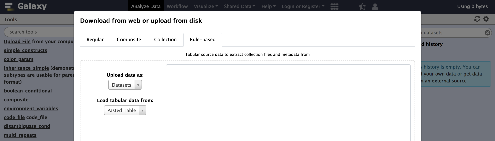 As you can see in this dialog, data can be selected from a history dataset or pasted in directly. If Galaxy is configured to allow FTP uploads, the contents of your FTP directory may be loaded directly as well.
- Paste your tabular data right into the textbox on this page as shown below
- Click the
Buildbutton.study_accession sample_accession experiment_accession fastq_ftp PRJDA60709 SAMD00016379 DRX000475 ftp.sra.ebi.ac.uk/vol1/fastq/DRR000/DRR000770/DRR000770.fastq.gz PRJDA60709 SAMD00016383 DRX000476 ftp.sra.ebi.ac.uk/vol1/fastq/DRR000/DRR000771/DRR000771.fastq.gz PRJDA60709 SAMD00016380 DRX000477 ftp.sra.ebi.ac.uk/vol1/fastq/DRR000/DRR000772/DRR000772.fastq.gz PRJDA60709 SAMD00016378 DRX000478 ftp.sra.ebi.ac.uk/vol1/fastq/DRR000/DRR000773/DRR000773.fastq.gz PRJDA60709 SAMD00016381 DRX000479 ftp.sra.ebi.ac.uk/vol1/fastq/DRR000/DRR000774/DRR000774.fastq.gz PRJDA60709 SAMD00016382 DRX000480 ftp.sra.ebi.ac.uk/vol1/fastq/DRR000/DRR000775/DRR000775.fastq.gz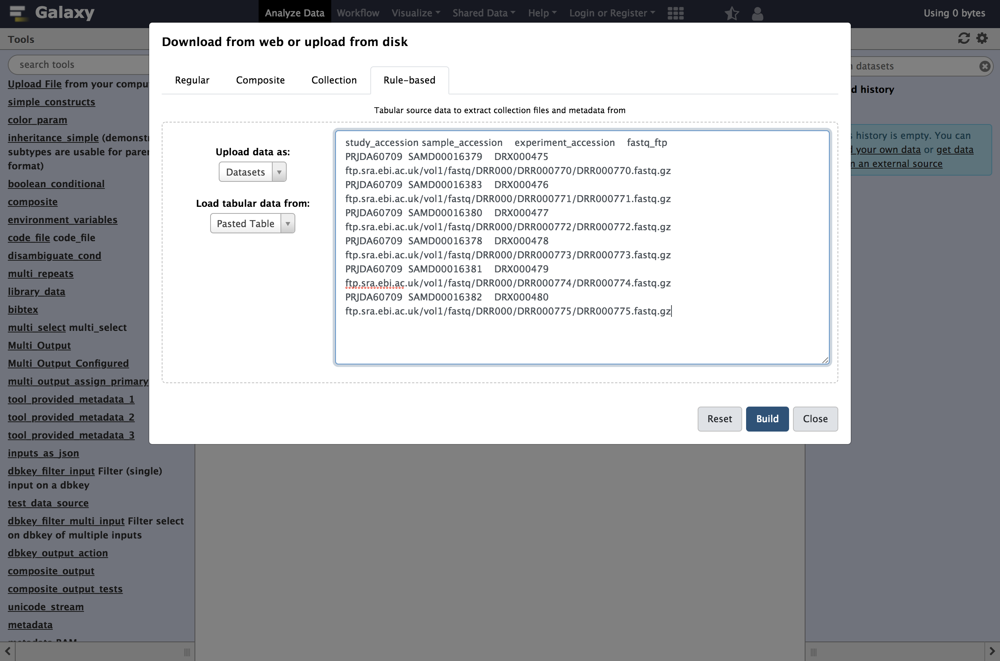
Examine the the
rules editorwhich now pops up.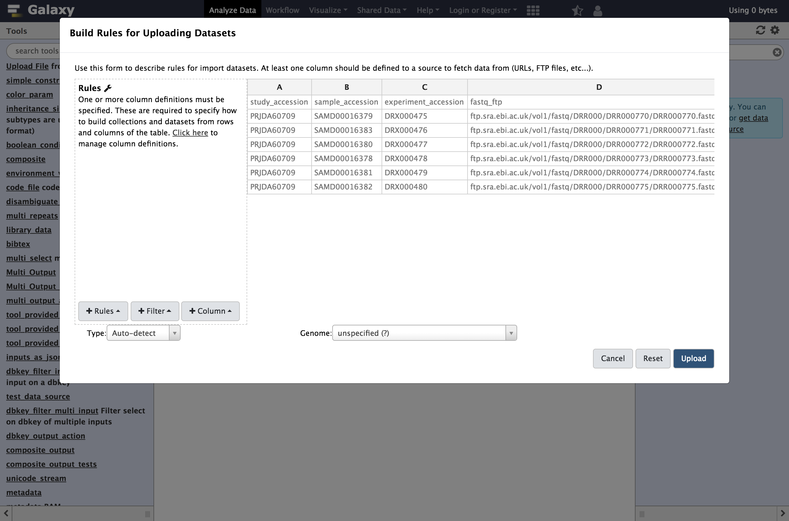
At first glance, this may be feel like Excel or another spreadsheet program and you may feel the urge to start editing cells but we strongly encourage defining rules for manipulating the data instead. There are a few reasons for this:
- Manually modifying this metadata is not reproducible - we will not belabor the point here but check out Why not use excel for this? for more context. Building up rules for modifying this metadata will allow Galaxy to track and report your manipulations (providing tracibility) and apply them to new sets of files (providing reproducibility).
- Manually modifying this metadata is error prone - we believe defining rules and treating the metadata in a systematic way minimizes the possibility to manual errors. These errors can be very hard to detect for large sets of data.
- Manually modifying data is not scalable - this rule-based technique potentially scales to importing tens of thousands of datasets.
So rather than modifying the data, we will define rules for manipulating it and setting up “column definitions” that tell Galaxy how to use the metadata during upload or collection creation.
In order to get these files into Galaxy, we will want to do a few things:
- Strip that header out of the data (it doesn’t contain a URL Galaxy can download).
- Define column
Cas the dataset name. - Define column
Das the dataset URL (this is the location Galaxy can download the data from). - Tell Galaxy to treat these files as
fastqsanger.gzfiles.
hands_on Hands-on: Using Tabular Inputs to the Rule Builder
We will start by stripping that header out of the table. We call rules that strip rows out the table
Filter rulesin this dialog.
- From Filter menu select
First or Last N Rows
- “Filter which rows?”:
first- “Filter how many rows?”:
1- Click
Apply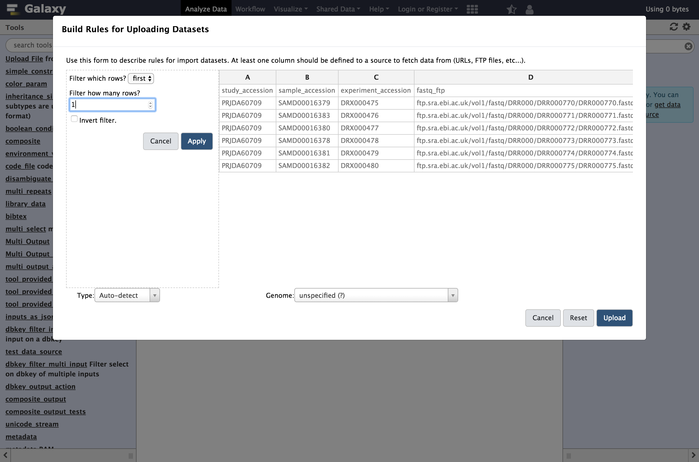Next we will define these columns for Galaxy.
- From Rules menu select
Add / Modify Column Definitions
- Click
Add Definitionbutton and selectName
- “Name”:
C- Repeat this again and select
URLinstead.
- “URL”:
D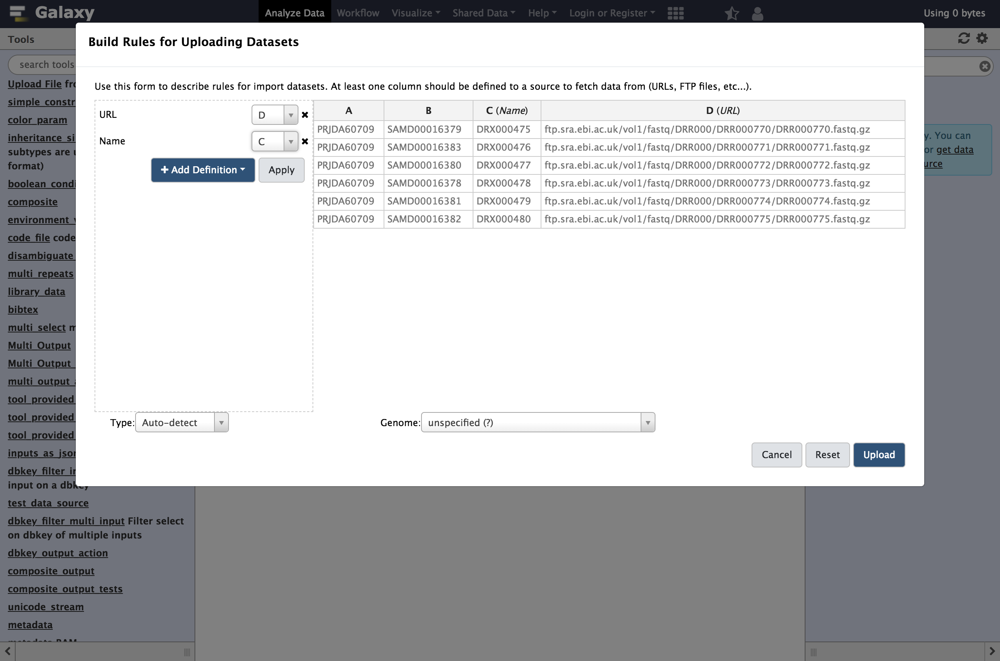
Click
Apply, and you should see your new column definitions listed as in the following screenshot.- Click the
Typeselection box at the bottom left of the upload dialog
- Change the datatype from
Auto-detecttofastqsanger. 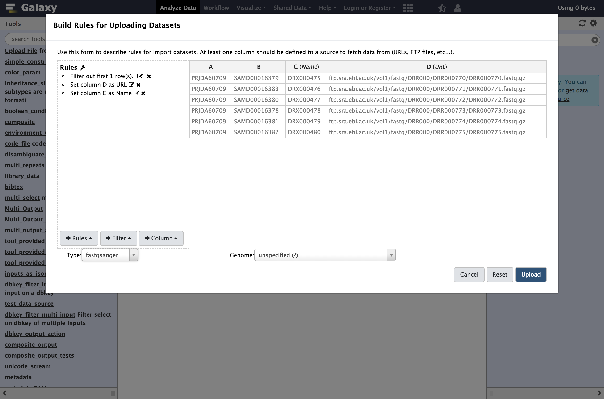You are now ready to start the upload
Click the
UploadbuttonAfter some time, the result in this case will be six datasets in your history. The next example will show to use the rule builder to create a collection.
Creating a Simple Dataset List
This example will demonstrate using such history datasets as the source for collection uploads - this can be handy when you’d like to apply existing Galaxy tabular manipulation tools to the metadata before processing for instance.
hands_on Hands-on: Creating a Simple Dataset List
tip Tip: Create a new history
Before we start uploading, it may be a good idea to create a new history for this example to keep things simple and match the following screenshots.
For our second example, we will use the same initial metadata.
comment Loading Metadata from a History Element
In addition to directly pasting data into the Rule Based Uploader, you can also load the metadata from a dataset in your Galaxy History, or from a file in your FTP directory if the admin has enabled FTP upload
- Upload the metadata from the first example to your Galaxy
- Open the
Rule-basedupload tab again, but this time:
- “Upload data as”:
Collection(s)- “Load tabular data from”:
a History Dataset- “Select dataset to load”: the dataset you just uploaded 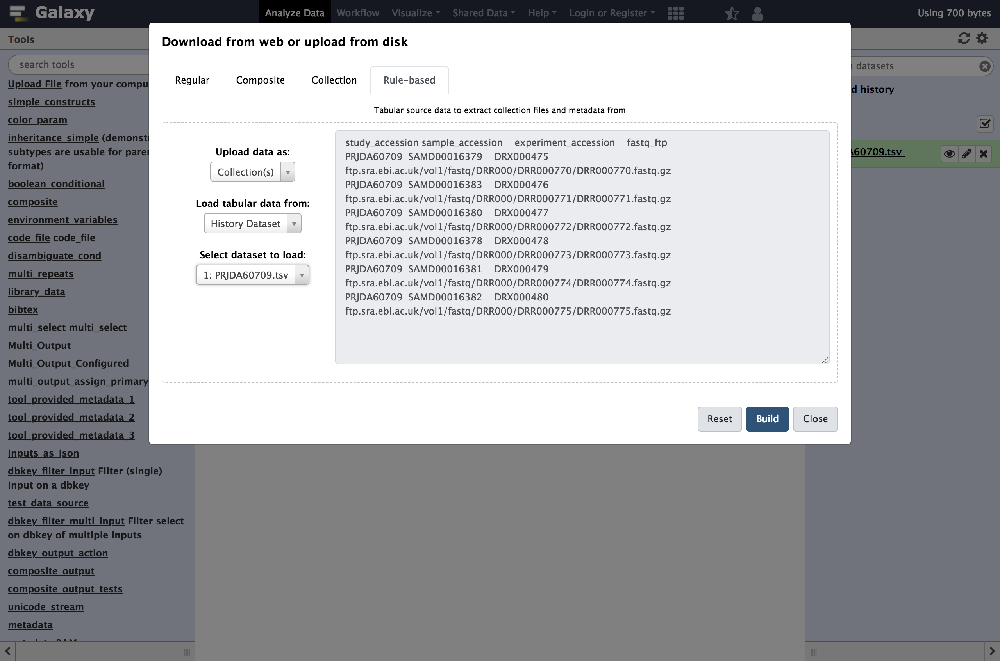
- Click
Buildto bring up the rule builder. 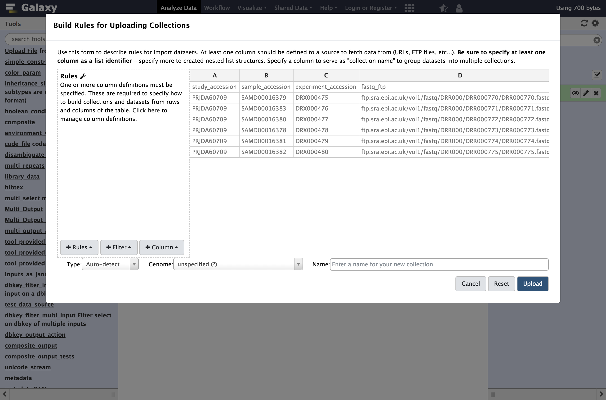- Repeat the steps from last time, except define column
Cas aList Identifierinstead of Name:
- From Filter menu select
First or Last N Rows
- “Filter which rows?”:
first- “Filter how many rows?”:
1- From Rules menu, select
Add / Modify Column Definitions
Add Definition,URL, Select ColumnDAdd Definition,List Identifier(s), ColumnC- “Type”:
fastqsanger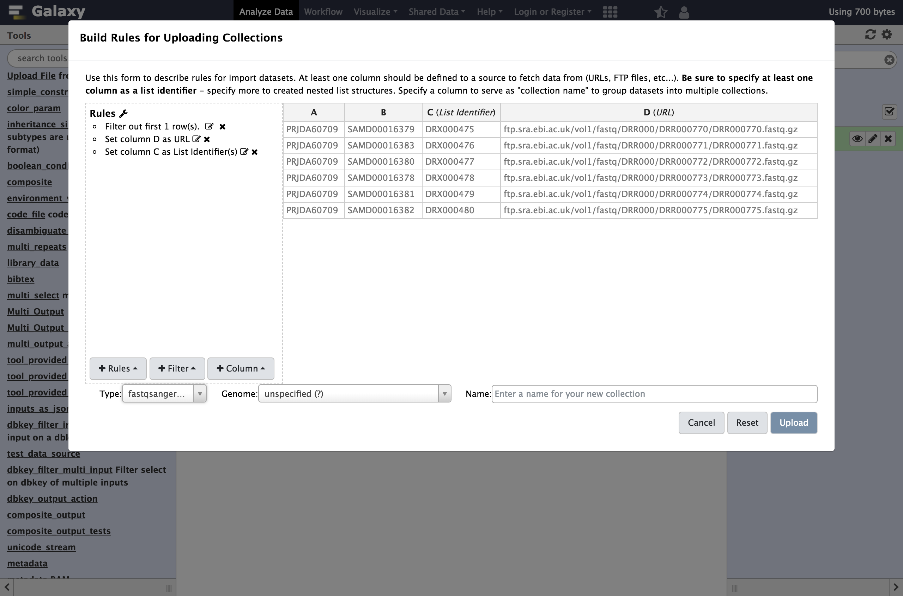
Rather than assigning column
CasName, in this example we assigned it as aList Identifier. This is the description of the element in the resulting dataset collection. This identifier is preserved in mapped outputs as you map tools over collections and is useful for tracking sample names, replicate numbers, conditions, etc..- Enter a name for our collection, for example the ENA study identifier as shown below,
PRJDA60709. 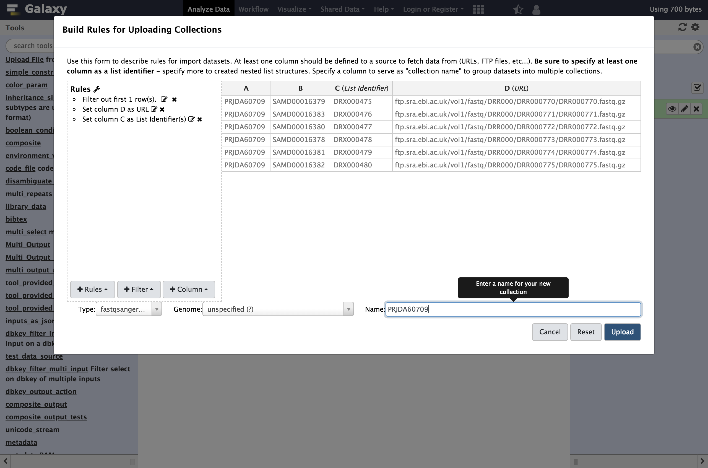Click
UploadThis time a single new entry will appear in your history panel corresponding to all the files gathered together in a simple list named PRJDA60709.
Creating a List of Dataset Pairs
For this next example we will again use ENA data, this time corresponding to the study PRJDB3920 instead.
hands_on Hands-on: Creating a List of Dataset Pairs
Open the Rule Builder
- Open the
Rule-basedupload tab again, but this time:
- “Upload data as”: Collection(s)
- “Load tabular data from”: a
Pasted TablePaste the following table
study_accession sample_accession experiment_accession fastq_ftp PRJDB3920 SAMD00034150 DRX036147 ftp.sra.ebi.ac.uk/vol1/fastq/DRR039/DRR039919/DRR039919_1.fastq.gz;ftp.sra.ebi.ac.uk/vol1/fastq/DRR039/DRR039919/DRR039919_2.fastq.gz PRJDB3920 SAMD00034150 DRX036148 ftp.sra.ebi.ac.uk/vol1/fastq/DRR039/DRR039920/DRR039920_1.fastq.gz;ftp.sra.ebi.ac.uk/vol1/fastq/DRR039/DRR039920/DRR039920_2.fastq.gz PRJDB3920 SAMD00034150 DRX036149 ftp.sra.ebi.ac.uk/vol1/fastq/DRR039/DRR039921/DRR039921_1.fastq.gz;ftp.sra.ebi.ac.uk/vol1/fastq/DRR039/DRR039921/DRR039921_2.fastq.gz PRJDB3920 SAMD00034150 DRX036150 ftp.sra.ebi.ac.uk/vol1/fastq/DRR039/DRR039922/DRR039922_1.fastq.gz;ftp.sra.ebi.ac.uk/vol1/fastq/DRR039/DRR039922/DRR039922_2.fastq.gz PRJDB3920 SAMD00034150 DRX036151 ftp.sra.ebi.ac.uk/vol1/fastq/DRR039/DRR039923/DRR039923_1.fastq.gz;ftp.sra.ebi.ac.uk/vol1/fastq/DRR039/DRR039923/DRR039923_2.fastq.gz PRJDB3920 SAMD00034153 DRX036152 ftp.sra.ebi.ac.uk/vol1/fastq/DRR039/DRR039924/DRR039924_1.fastq.gz;ftp.sra.ebi.ac.uk/vol1/fastq/DRR039/DRR039924/DRR039924_2.fastq.gz PRJDB3920 SAMD00034152 DRX036164 ftp.sra.ebi.ac.uk/vol1/fastq/DRR039/DRR039936/DRR039936_1.fastq.gz;ftp.sra.ebi.ac.uk/vol1/fastq/DRR039/DRR039936/DRR039936_2.fastq.gzClick
Buildand proceed to the rule builder. 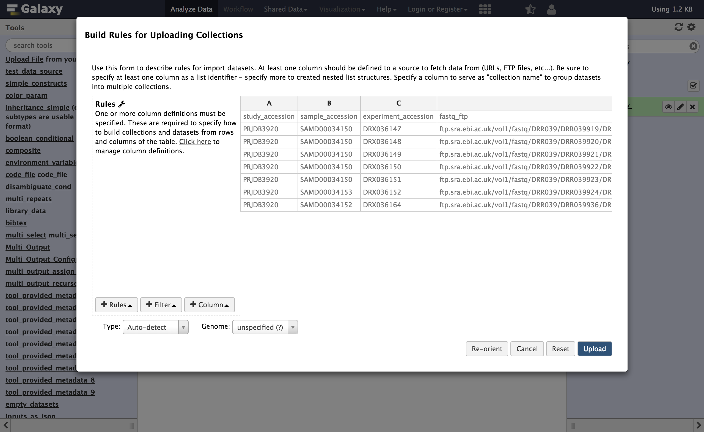- Repeat the last example with:
- From Filter menu select
First or Last N Rows
- “Filter which rows?”:
first- “Filter how many rows?”:
1- From Rules menu, select
Add / Modify Column Definitions
Add Definition,List Identifier(s), ColumnC- “Type”:
fastqsangerIn this dataset, column
Dcontains two URLs, separated by a semicolon;. So we cannot define that column as the URL directly, we will need to split it into two columns first. We will build a regular expression that captures two “groups” from this column with two URLs - one group for everything before the;and one group for everything after.- From Column, select
Using a Regular Expression
- “From Column”:
D- Select
Create columns matching expression groups- “Regular Expression”:
(.*);(.*)- “Number of Groups”:
2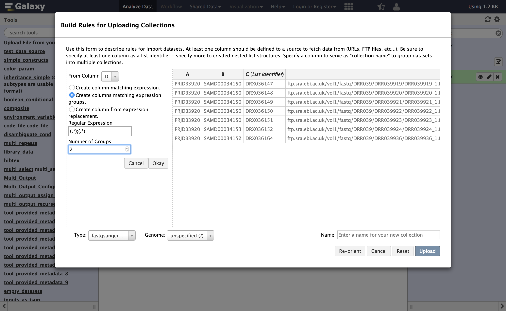comment Regular expression explained
Here
.*means match any number of any character - so basically match anything. The parentheses around.*means form a “group” from whatever is matched. The;will match with the actual;in the target cells. In his example we have two such matching groups.Click Apply to apply the regular expression to the metadata table
Column
Dis no longer needed, so we can remove it:- From Rules select
Remove Column(s)
- “From Column”:
D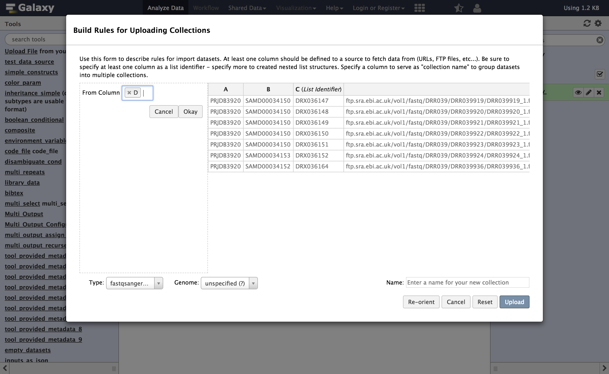We now have two columns containing URLs - but we can only have one URL per row. So we will split each row into two (one for the forward reads and one for the reverse):
- From Rules select
Split Column(s)
- “Odd Row Column(s)”:
D- “Even Row Column(s)”:
E- Click
Apply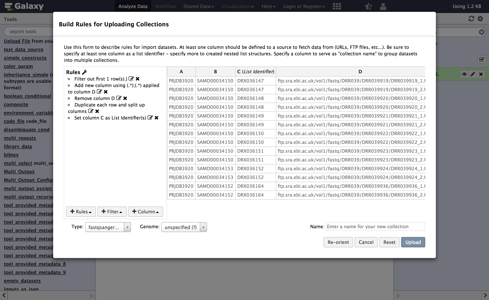 For every row before the transformation with columns
ABCDE, this will produce two rows,ABCDandABCE. Thus you will have twice as many rows as before.
Now we need to inform Galaxy which of these rows are “forward” reads and which are “reverse” reads. We will do this by adding a new column again using a regular expression. Here we will match on the_1or_2in the filename at the end of the URLs.- From Column, select
Using a Regular Expression
- “Column”:
D- Select
Create columns matching expression groups- “Regular Expression”:
.*_(\d).fastq.gz.- “Number of groups”:
1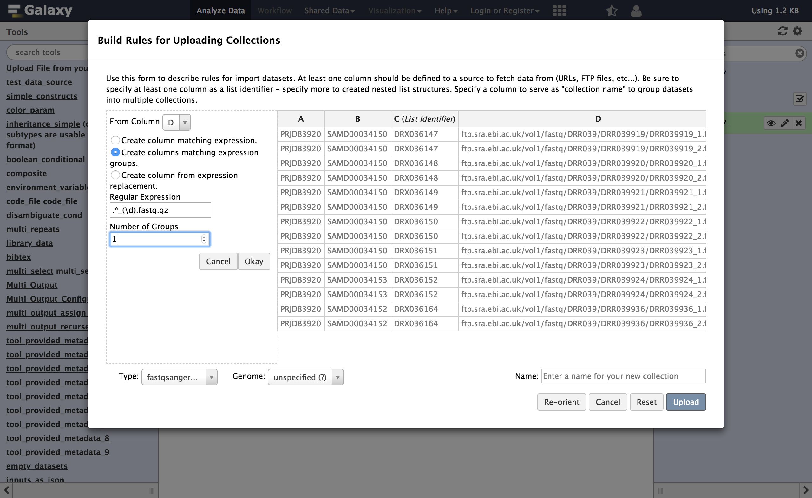comment Regular expression explained
Here
\dmeans match any digit. This regular expression will use a capturing group to select only the1or2part of the URL that appears before the extension. In his example we have one matching groups ( contained in the parentheses )At this point, you can swap the last two columns to bring this new paired indicator column toward the beginning of the table. This is not necessary but it makes the screenshots more informative.
- From Rule select
Swap Columns
- “Swap Column”:
D- “With Column”:
E- Open the column definitions back up (Rules Menu,
Add / Modify Column Definitions)
- “paired indicator”: column
D- “URL”: column
Ecomment Paired Indicator Column Definition
The column selector for paired indicator is a bit less obvious and a bit more picky than the other ones we have used. The row value of the paired indicator column must be one of the following to indicate “forward” or “reverse” reads.
Column Acceptable Indicators Forward 1,R1,forward,f, orFReverse 2,R2,reverse,r, orR- Supply a name for your collection and click Upload 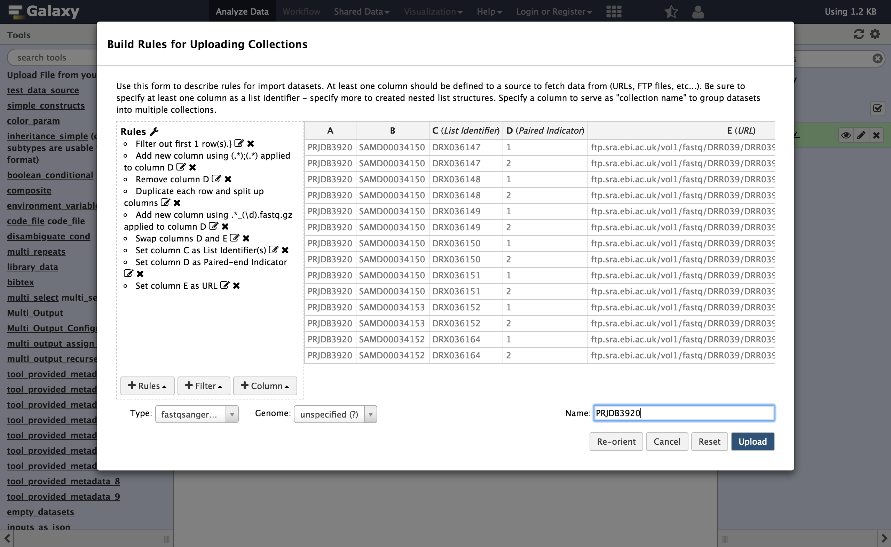
Building URLs from Accession Information
In the previous examples the metadata we started with already contained URLs. In some cases such URLs will not be present in the available metadata and may need to be constructed dynamically from identifiers.
For this multiomics example, we will start with a uniprot query and build URLs from accession numbers contained within the supplied tabular data. Consider the uniprot query https://uniprot.org/uniprot/?query=proteome:UP000052092+AND+proteomecomponent:”Genome”, pictured below.
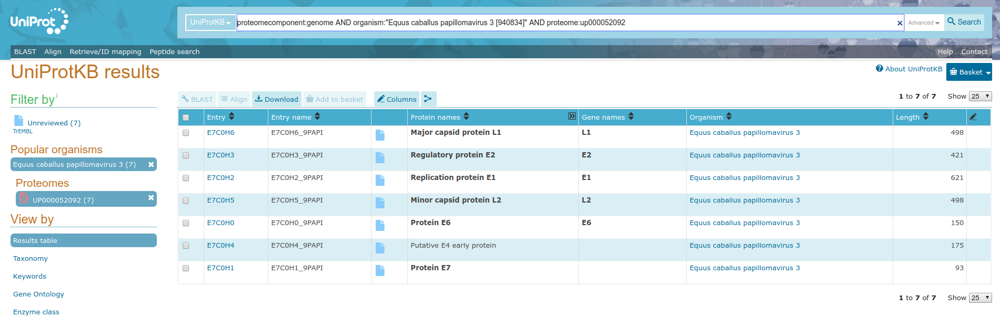
In order to make this data useful for the Rule Builder, we need to turn these accessoin IDs into URLs.
hands_on Hands-on: Turn Uniprot Accession IDs into URLs
- Open Uniprot
- Click on one of the entries in the table (e.g.
E7C0H6)- Select
Formatfrom the top menuClick
FASTA (canonical)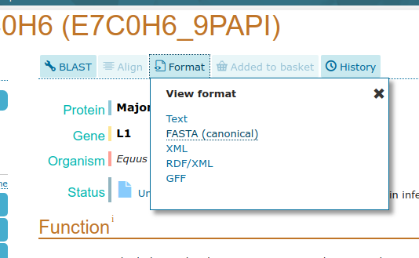
Your browser will redirect to the fasta file
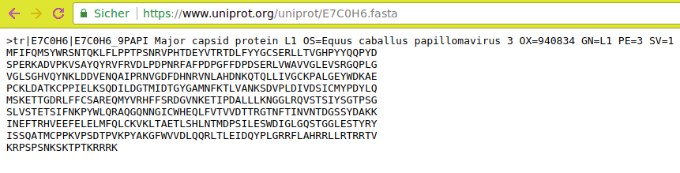
- We can deduce that the FASTA files for the other accession IDs will be available from URLs of the form
https://www.uniprot.org/uniprot/{identifier}.fasta
We will use this information to build a collection of FASTA files from our query.
hands_on Hands-on: Build Collection from Uniprot Accession IDs
- Open the Rule Builder
- “Upload data as”:
Collection(s)- “Load tabular data from”:
Pasted TablePaste the following table:
Entry Entry name Status Protein names Gene names Organism Length E7C0H6 E7C0H6_9PAPI unreviewed Major capsid protein L1 L1 Equus caballus papillomavirus 3 498 E7C0H0 E7C0H0_9PAPI unreviewed Protein E6 E6 Equus caballus papillomavirus 3 150 E7C0H5 E7C0H5_9PAPI unreviewed Minor capsid protein L2 L2 Equus caballus papillomavirus 3 498 E7C0H1 E7C0H1_9PAPI unreviewed Protein E7 Equus caballus papillomavirus 3 93 E7C0H3 E7C0H3_9PAPI unreviewed Regulatory protein E2 E2 Equus caballus papillomavirus 3 421 E7C0H4 E7C0H4_9PAPI unreviewed Putative E4 early protein (Fragment) Equus caballus papillomavirus 3 175 E7C0H2 E7C0H2_9PAPI unreviewed Replication protein E1 (EC 3.6.4.12) (ATP-dependent helicase E1) E1 Equus caballus papillomavirus 3 621- Click
Build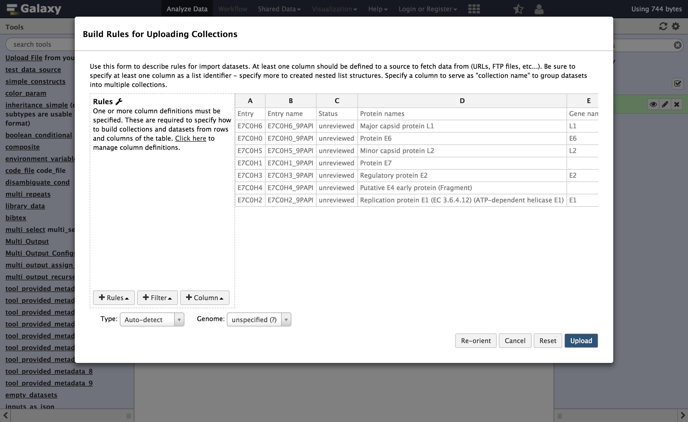- Let’s apply some initial filtering to our data:
- From Filter menu, select
First or Last N Rows
- Filter the first row
- From Rules menu, select
Remove Columns
- Remove columns B, C, E, F, and G.
- From Rules menu, select
Add / Modify Column Definitions
Click
Add Definition,Info, ColumnBThis is a block of text that will appear in the history panel when the dataset is expanded. 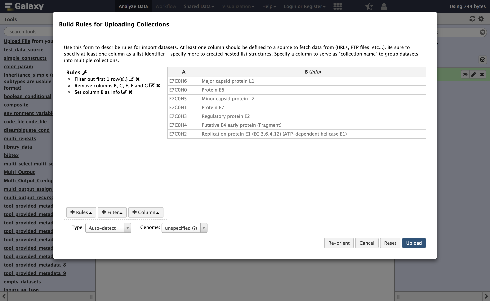
These datasets appear in a seemingly random order, it will be easier to manage things in the history panel if we sort this data first. 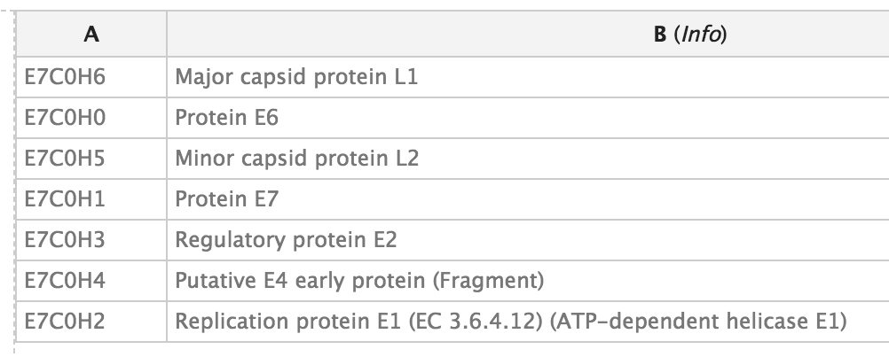
- From Rules menu, select
Sort
- “From Column”:
ANext is the key step, we will build a URL from the pattern we described above using the accession ID in column A.
- From Column menu, select
Using a Regular Expression
- “From Column”:
A- Select
Create column from expression replacement- “Regular Expression”:
.*- “Replacement Expression”:
https://www.uniprot.org/uniprot/\0.fastaClick
Apply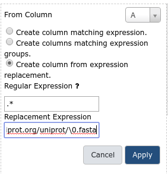
comment Regular expression explained
In this regular expression,
.*will capture the entire accession ID.In the replacement expression,
https://www.uniprot.org/uniprot/\0.fasta, the\0will be replaced by the captured regular expression (the accession ID) in the resulting column values.The new column C with the URL we built should appear as shown below. 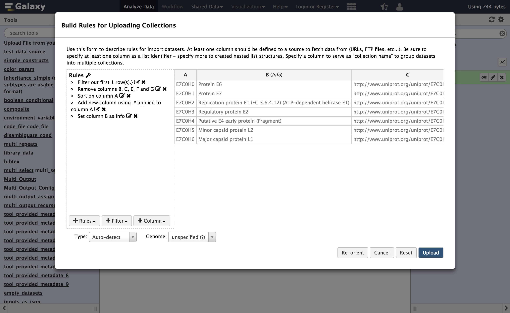
Finally, let us set our column definitions:
- From Rules menu, select
Add / Modify Column Definitions
Add Definition,List Identifier(s), Select ColumnAAdd Definition,URL, ColumnC- Finalize the collection:
- “Name”: for example
UP000052092- “Type”:
fasta- Click
Upload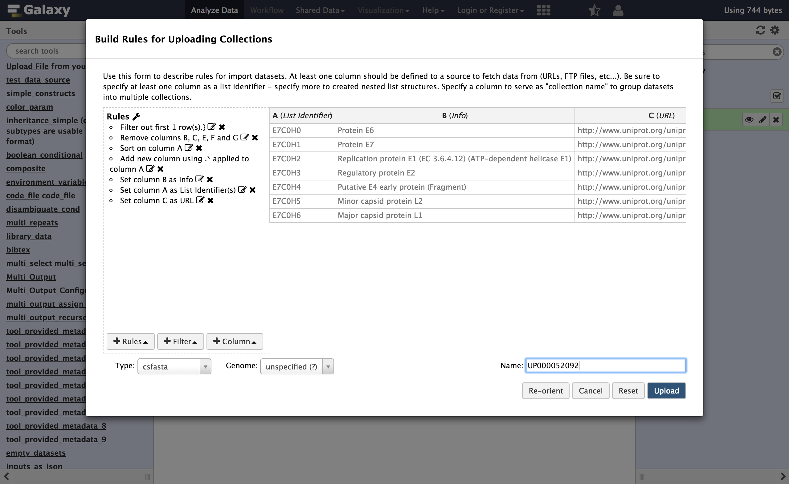comment JSON Rule Definitions
This example is ready to go, but before clicking “Build” it may be interesting to check out the rules Galaxy is following to clean and import your data. Click the little Wrench icon at the top of the list of rules. The result is a bunch of JavaScript object notation (JSON) text that you should never need to worry about but that you can build or modify by hand if you find it useful. We will use it the next example to quickly restore the list builder back to this state.
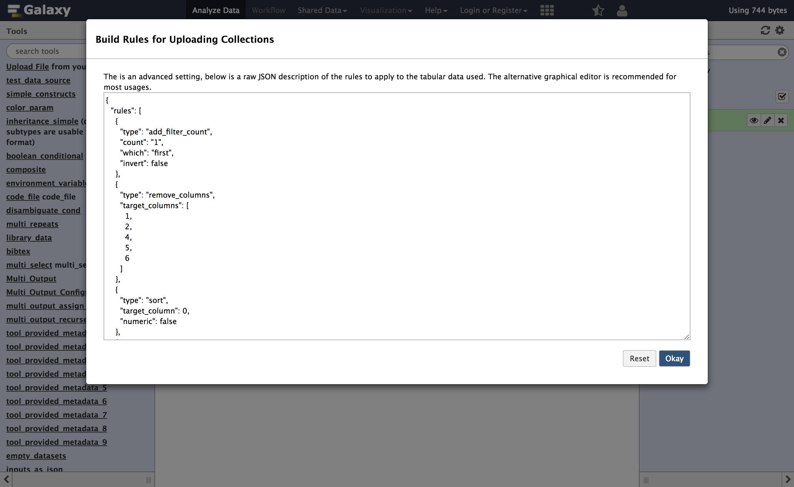
This could additionally be copied and pasted if you need to do the same set of operations on multiple metadata inputs that are similarly formatted.
- Click
Buildand wait for your list of FASTA files to appear.
Building Matched Collections
This example will demonstrate creating multiple collections at the same time. We will use the same metadata generated from UniProt as the last example but we will build two collections with matching list identifiers - one collection of FASTA files and one collection of GFF files. This will also demonstrate reading the collection name and the target datatype from the metadata itself - important techniques if generating multiple collections with different names and datatypes.
For this example we will re-use the metadata from the previous example.
hands_on Hands-on: Build a matched collection
- Open the Rule Builder
- “Upload data as”:
Collection(s)- “Load tabular data from”:
Pasted Table- Paste the table from the previous exercise:
Entry Entry name Status Protein names Gene names Organism Length E7C0H6 E7C0H6_9PAPI unreviewed Major capsid protein L1 L1 Equus caballus papillomavirus 3 498 E7C0H0 E7C0H0_9PAPI unreviewed Protein E6 E6 Equus caballus papillomavirus 3 150 E7C0H5 E7C0H5_9PAPI unreviewed Minor capsid protein L2 L2 Equus caballus papillomavirus 3 498 E7C0H1 E7C0H1_9PAPI unreviewed Protein E7 Equus caballus papillomavirus 3 93 E7C0H3 E7C0H3_9PAPI unreviewed Regulatory protein E2 E2 Equus caballus papillomavirus 3 421 E7C0H4 E7C0H4_9PAPI unreviewed Putative E4 early protein (Fragment) Equus caballus papillomavirus 3 175 E7C0H2 E7C0H2_9PAPI unreviewed Replication protein E1 (EC 3.6.4.12) (ATP-dependent helicase E1) E1 Equus caballus papillomavirus 3 621- Click
Buildand proceed to the rule builder. 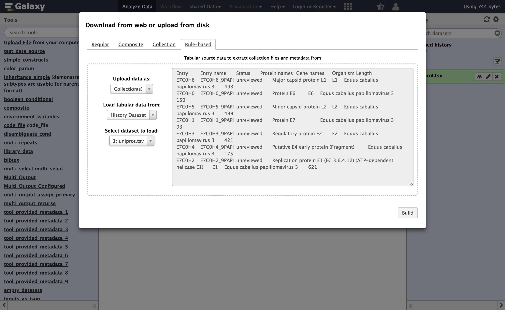Instead of manually creating the rules this time, we will import an existing set of rules from some JSON. Copy the following text into your clipboard. These are the same rules as used in the Building URLs from Accession Information tutorial.
{"rules":[{"type":"add_filter_count","count":"1","which":"first","invert":false},{"type":"remove_columns","target_columns":[1,2,4,5,6]},{"type":"sort","target_column":0,"numeric":false},{"type":"add_column_regex","target_column":0,"expression":".*","replacement":"http://www.uniprot.org/uniprot/\\0.fasta"}],"mapping":[{"type":"info","columns":[1]},{"type":"list_identifiers","columns":[0],"editing":false},{"type":"url","columns":[2]}],"extension":"csfasta"}- In the ruler builder interface, select the wrench icon next to the word
Rules
- Paste the rules into the textbox
- Click
Apply
You should now see the rules you created in the last example.
This next part may seem a bit silly at first but we are going to add some columns with fixed values into the builder. When we split up the columns at a later step this will make sense.
- From Column menu, select
Fixed Value
- “Value”:
fasta- Click
ApplyThis value will eventually be used for the datatype of the file.- Repeat this process with:
- “Value”:
UP000052092 FASTANext we will repeat the process of adding URL, name, and datatype columns but for GFF files.
- From Column, select
Using a Regular Expression
- “From Column”:
A- Select
Create column from expression replacement- “Regular Expression”:
.*- “Replacement Expression”:
https://www.uniprot.org/uniprot/\0.gff. 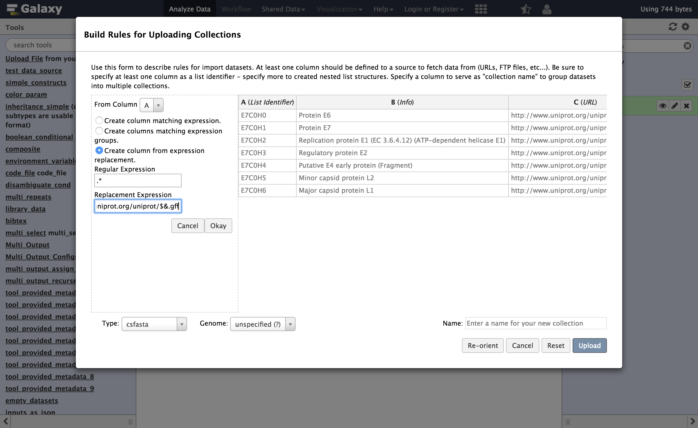Next we will add two more columns
- From Column menu, select
Fixed Value
- “Value”:
gff3- Click
ApplyThis value will eventually be used for the datatype of the file.
- Repeat this process with:
- “Value”:
UP000052092 GFF3Your very large list of rules should now look like the following screenshot. 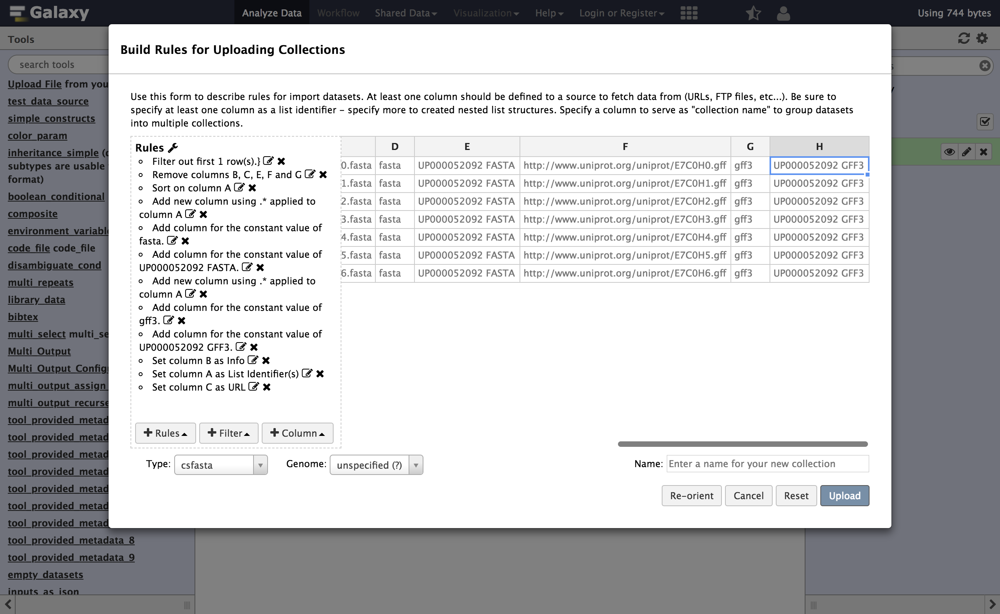
Notice we have two URLs, two collection names, and two datatype extensions for each accession ID we started with. Like in the example where we split the columns, here we will split these up to describe multiple collections.
- From Rules menu, select
Split Columns
- “Odd Number Column(s)”:
C,D, andE(the fasta columns)- “Even Number Column(s)”:
F,G, andH(the gff3 columns)This will take the row consisting of the columns
ABCDEFGHand build two rows, one withABCDEFand the other withABFGH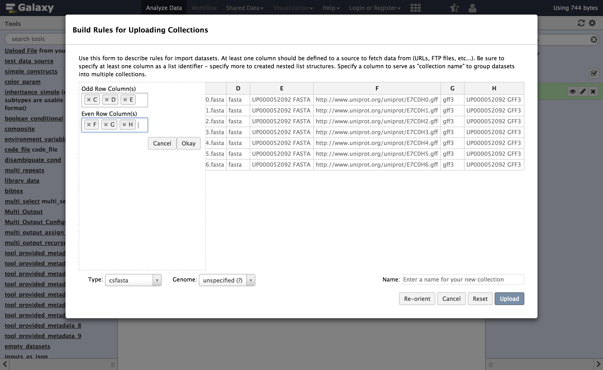Click
Applyand you should be returned the list of rules. 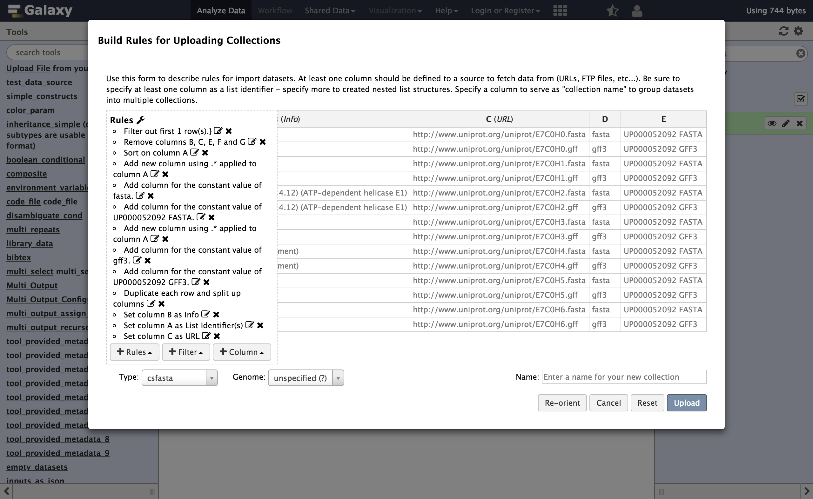Finally, we need to add some more column definitions for these new columns we just created:
- From Rules menu, select
Add / Modify Column Definitions
Add Definition,List Identifier, ColumnAAdd Definition,Info, ColumnBAdd Definition,URL, ColumnCAdd Definition,Type, ColumnDAdd Definition,Collection Name, ColumnENotice when these values are being generated from the metadata the option to specify them manually from the type and collection name boxes from the bottom of the form disappear. 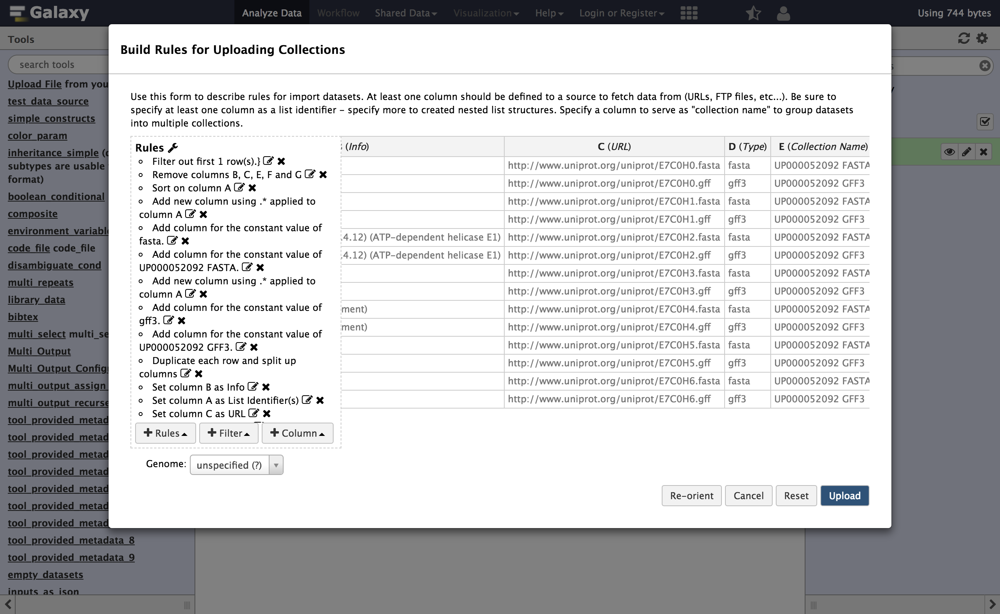
Click
UploadGalaxy should make two collections - one containing FASTA files and one containing GFF3 files.


Building Nested Lists
In this example, we will be building a nested list using data from SRA. This is a more sophisticated structure for organizing datasets in Galaxy. In the above examples we organized datasets into simple lists with a single “list identifier” describing the files in the collection. Galaxy allows lists to be organized into nested lists - where each level of the list has an identifier.
If two such identifiers are present, this is a list of lists (called list:list in the workflow editor). In such a structure the outer identifiers (or first level of identifiers) may describe sample names and the inner identifiers (or second level) may describe replicates. Alternative the outer identifiers may describe conditions and the inner identifiers may describe individual samples. The structure of such collections should ideally be dictated by the study design.
If certain parts of your analysis require benefit from datasets being nested this way while other parts require feeding you data to a Galaxy tool all together without such a structure, then it is probably best to go ahead and build nested lists at the start of your analysis and then use the “Flatten Collection” tool on the resulting collection or a derivative collection to get the flat structure needed by certain tools in certain parts of your analysis.
For this example, we will describe analyzing the metadata of the SRA project PRJNA355367. Unlike the other examples, these SRA files are relatively large and not ideal for training purposes. So we’ve pre-downloaded the project metadata and replaced all the links with simple text files that should download really quickly - the result is here.
So use either the SRA exporter tool or download the CSV file with fake URLs. If you download the data from the SRA exporter tool, select only the first 12 columns from the data (up to the column labeled “Library Name”) and copy the resulting data to your clipboard.
hands_on Hands-on: Building Nested Lists
- Open the Rule Builder
- “Upload data as”:
Collection(s)- “Load tabular data from”:
Pasted Table- Paste the table
solution Show Table
Below is the table with pre-downloaded example data mentioned above:
Run ReleaseDate LoadDate spots bases spots_with_mates avgLength size_MB AssemblyName download_path Experiment LibraryName SRR5363633 2017-03-21 11:40:07 2017-03-21 11:29:13 9942851 1993124486 9791175 200 809 assembly https://raw.githubusercontent.com/jmchilton/galaxy-examples/master/sra_PRJNA355367/SRR5363633 SRX2659078 wtPA14 SRR5363634 2017-03-21 13:19:08 2017-03-21 13:17:11 1158307 232298840 1141697 200 81 assembly https://raw.githubusercontent.com/jmchilton/galaxy-examples/master/sra_PRJNA355367/SRR5363634 SRX2659079 con10 SRR5363635 2017-03-21 13:19:08 2017-03-21 13:16:39 1270067 254490549 1249658 200 89 assembly https://raw.githubusercontent.com/jmchilton/galaxy-examples/master/sra_PRJNA355367/SRR5363635 SRX2659080 con9 SRR5363636 2017-03-21 13:19:08 2017-03-21 13:16:56 1023725 205709452 1013013 200 74 assembly https://raw.githubusercontent.com/jmchilton/galaxy-examples/master/sra_PRJNA355367/SRR5363636 SRX2659081 con8 SRR5363637 2017-03-21 11:37:06 2017-03-21 11:28:00 3179821 638410351 3141113 200 216 assembly https://raw.githubusercontent.com/jmchilton/galaxy-examples/master/sra_PRJNA355367/SRR5363637 SRX2659082 con7 SRR5363638 2017-03-21 12:53:08 2017-03-21 12:04:58 3359498 675138344 3325080 200 288 assembly https://raw.githubusercontent.com/jmchilton/galaxy-examples/master/sra_PRJNA355367/SRR5363638 SRX2659083 con6 SRR5363639 2017-03-21 13:19:08 2017-03-21 13:17:25 2074389 416191247 2046343 200 145 assembly https://raw.githubusercontent.com/jmchilton/galaxy-examples/master/sra_PRJNA355367/SRR5363639 SRX2659084 con5 SRR5363640 2017-03-21 13:19:08 2017-03-21 13:17:46 2692438 540402576 2658118 200 187 assembly https://raw.githubusercontent.com/jmchilton/galaxy-examples/master/sra_PRJNA355367/SRR5363640 SRX2659085 con4 SRR5363641 2017-03-21 13:19:08 2017-03-21 13:17:14 2271913 456015568 2243122 200 161 assembly https://raw.githubusercontent.com/jmchilton/galaxy-examples/master/sra_PRJNA355367/SRR5363641 SRX2659086 con3 SRR5363642 2017-03-21 13:19:08 2017-03-21 13:16:58 2164949 434399488 2136063 200 151 assembly https://raw.githubusercontent.com/jmchilton/galaxy-examples/master/sra_PRJNA355367/SRR5363642 SRX2659087 con2 SRR5363643 2017-03-21 11:37:06 2017-03-21 11:27:34 1999861 401313700 1973567 200 140 assembly https://raw.githubusercontent.com/jmchilton/galaxy-examples/master/sra_PRJNA355367/SRR5363643 SRX2659088 con1 SRR5363644 2017-03-21 11:44:06 2017-03-21 11:36:06 13473203 2704705108 13306228 200 1076 assembly https://raw.githubusercontent.com/jmchilton/galaxy-examples/master/sra_PRJNA355367/SRR5363644 SRX2659089 str10 SRR5363645 2017-03-21 11:37:06 2017-03-21 11:27:24 1801962 362038363 1782599 200 130 assembly https://raw.githubusercontent.com/jmchilton/galaxy-examples/master/sra_PRJNA355367/SRR5363645 SRX2659090 str9 SRR5363646 2017-03-21 11:36:06 2017-03-21 11:26:22 39113 7861711 39106 200 4 assembly https://raw.githubusercontent.com/jmchilton/galaxy-examples/master/sra_PRJNA355367/SRR5363646 SRX2659091 str8 SRR5363647 2017-03-21 11:36:06 2017-03-21 11:26:43 1255569 252289127 1242359 200 90 assembly https://raw.githubusercontent.com/jmchilton/galaxy-examples/master/sra_PRJNA355367/SRR5363647 SRX2659092 str7 SRR5363648 2017-03-21 11:36:06 2017-03-21 11:26:42 903374 181362535 892308 200 64 assembly https://raw.githubusercontent.com/jmchilton/galaxy-examples/master/sra_PRJNA355367/SRR5363648 SRX2659093 str6 SRR5363649 2017-03-21 11:37:06 2017-03-21 11:27:05 2059145 413598822 2035919 200 140 assembly https://raw.githubusercontent.com/jmchilton/galaxy-examples/master/sra_PRJNA355367/SRR5363649 SRX2659094 str5 SRR5363650 2017-03-21 11:37:06 2017-03-21 11:27:37 1685689 338152407 1662375 200 119 assembly https://raw.githubusercontent.com/jmchilton/galaxy-examples/master/sra_PRJNA355367/SRR5363650 SRX2659095 str4 SRR5363651 2017-03-21 11:36:06 2017-03-21 11:26:51 698470 140689157 694502 201 48 assembly https://raw.githubusercontent.com/jmchilton/galaxy-examples/master/sra_PRJNA355367/SRR5363651 SRX2659096 str3 SRR5363652 2017-03-21 11:37:06 2017-03-21 11:27:53 755393 152119594 750753 201 52 assembly https://raw.githubusercontent.com/jmchilton/galaxy-examples/master/sra_PRJNA355367/SRR5363652 SRX2659097 str2 SRR5363653 2017-03-21 11:37:06 2017-03-21 11:27:41 1651613 331529685 1630882 200 119 assembly https://raw.githubusercontent.com/jmchilton/galaxy-examples/master/sra_PRJNA355367/SRR5363653 SRX2659098 str1 SRR5363654 2017-03-21 11:37:06 2017-03-21 11:27:37 1693765 340003252 1672625 200 118 assembly https://raw.githubusercontent.com/jmchilton/galaxy-examples/master/sra_PRJNA355367/SRR5363654 SRX2659099 gen10 SRR5363655 2017-03-21 11:37:06 2017-03-21 11:28:30 2173449 436124391 2144642 200 153 assembly https://raw.githubusercontent.com/jmchilton/galaxy-examples/master/sra_PRJNA355367/SRR5363655 SRX2659100 gen9 SRR5363656 2017-03-21 11:43:06 2017-03-21 11:33:05 9625215 1933561588 9519090 200 778 assembly https://raw.githubusercontent.com/jmchilton/galaxy-examples/master/sra_PRJNA355367/SRR5363656 SRX2659101 gen8 SRR5363657 2017-03-21 11:37:06 2017-03-21 11:27:38 1106350 222126014 1092932 200 79 assembly https://raw.githubusercontent.com/jmchilton/galaxy-examples/master/sra_PRJNA355367/SRR5363657 SRX2659102 gen7 SRR5363658 2017-03-21 11:37:07 2017-03-21 11:27:07 565475 113765064 560920 201 42 assembly https://raw.githubusercontent.com/jmchilton/galaxy-examples/master/sra_PRJNA355367/SRR5363658 SRX2659103 gen6 SRR5363659 2017-03-21 11:37:07 2017-03-21 11:28:20 1320926 265553033 1308329 201 96 assembly https://raw.githubusercontent.com/jmchilton/galaxy-examples/master/sra_PRJNA355367/SRR5363659 SRX2659104 gen5 SRR5363660 2017-03-21 11:37:07 2017-03-21 11:28:18 949047 190786413 939940 201 70 assembly https://raw.githubusercontent.com/jmchilton/galaxy-examples/master/sra_PRJNA355367/SRR5363660 SRX2659105 gen4 SRR5363661 2017-03-21 11:39:07 2017-03-21 11:29:11 1609659 323469152 1593027 200 116 assembly https://raw.githubusercontent.com/jmchilton/galaxy-examples/master/sra_PRJNA355367/SRR5363661 SRX2659106 gen3 SRR5363662 2017-03-21 11:37:07 2017-03-21 11:28:20 1244105 249942443 1230587 200 90 assembly https://raw.githubusercontent.com/jmchilton/galaxy-examples/master/sra_PRJNA355367/SRR5363662 SRX2659107 gen2 SRR5363663 2017-03-21 11:44:06 2017-03-21 11:34:00 13546763 2714292352 13327595 200 1112 assembly https://raw.githubusercontent.com/jmchilton/galaxy-examples/master/sra_PRJNA355367/SRR5363663 SRX2659108 gen1 SRR5363664 2017-03-21 11:37:07 2017-03-21 11:28:35 1995417 400617217 1971115 200 140 assembly https://raw.githubusercontent.com/jmchilton/galaxy-examples/master/sra_PRJNA355367/SRR5363664 SRX2659109 pit9 SRR5363665 2017-03-21 11:39:07 2017-03-21 11:29:18 2098280 421450493 2074524 200 146 assembly https://raw.githubusercontent.com/jmchilton/galaxy-examples/master/sra_PRJNA355367/SRR5363665 SRX2659110 pit10 SRR5363666 2017-03-21 11:39:07 2017-03-21 11:28:56 1624164 326200210 1605561 200 115 assembly https://raw.githubusercontent.com/jmchilton/galaxy-examples/master/sra_PRJNA355367/SRR5363666 SRX2659111 pit8 SRR5363667 2017-03-21 11:39:07 2017-03-21 11:28:56 1765896 355178220 1750742 201 122 assembly https://raw.githubusercontent.com/jmchilton/galaxy-examples/master/sra_PRJNA355367/SRR5363667 SRX2659112 pit7 SRR5363668 2017-03-21 11:39:07 2017-03-21 11:29:36 834144 167643900 825708 200 59 assembly https://raw.githubusercontent.com/jmchilton/galaxy-examples/master/sra_PRJNA355367/SRR5363668 SRX2659113 pit6 SRR5363669 2017-03-21 11:42:06 2017-03-21 11:31:07 9524989 1913263017 9418320 200 780 assembly https://raw.githubusercontent.com/jmchilton/galaxy-examples/master/sra_PRJNA355367/SRR5363669 SRX2659114 pit5 SRR5363670 2017-03-21 11:39:07 2017-03-21 11:28:48 1196456 240479817 1184548 200 84 assembly https://raw.githubusercontent.com/jmchilton/galaxy-examples/master/sra_PRJNA355367/SRR5363670 SRX2659115 pit4 SRR5363671 2017-03-21 11:39:07 2017-03-21 11:29:21 1703068 341745049 1680568 200 119 assembly https://raw.githubusercontent.com/jmchilton/galaxy-examples/master/sra_PRJNA355367/SRR5363671 SRX2659116 pit3 SRR5363672 2017-03-21 11:40:07 2017-03-21 11:29:21 1752519 352259586 1735224 201 122 assembly https://raw.githubusercontent.com/jmchilton/galaxy-examples/master/sra_PRJNA355367/SRR5363672 SRX2659117 pit2 SRR5363673 2017-03-21 11:37:07 2017-03-21 11:28:40 1702102 341794907 1682027 200 121 assembly https://raw.githubusercontent.com/jmchilton/galaxy-examples/master/sra_PRJNA355367/SRR5363673 SRX2659118 pit1 SRR5363674 2017-03-21 11:37:07 2017-03-21 11:28:41 2186337 438861929 2158858 200 155 assembly https://raw.githubusercontent.com/jmchilton/galaxy-examples/master/sra_PRJNA355367/SRR5363674 SRX2659119 car10 SRR5363675 2017-03-21 11:37:07 2017-03-21 11:28:37 1806341 362679360 1784566 200 128 assembly https://raw.githubusercontent.com/jmchilton/galaxy-examples/master/sra_PRJNA355367/SRR5363675 SRX2659120 car9 SRR5363676 2017-03-21 11:37:07 2017-03-21 11:28:29 1492644 299621613 1473926 200 106 assembly https://raw.githubusercontent.com/jmchilton/galaxy-examples/master/sra_PRJNA355367/SRR5363676 SRX2659121 car8 SRR5363677 2017-03-21 11:40:07 2017-03-21 11:29:02 2139706 429729175 2115063 200 151 assembly https://raw.githubusercontent.com/jmchilton/galaxy-examples/master/sra_PRJNA355367/SRR5363677 SRX2659122 car7 SRR5363678 2017-03-21 11:40:07 2017-03-21 11:29:13 1787521 358790286 1764881 200 124 assembly https://raw.githubusercontent.com/jmchilton/galaxy-examples/master/sra_PRJNA355367/SRR5363678 SRX2659123 car6 SRR5363679 2017-03-21 11:38:06 2017-03-21 11:28:48 1500378 300767719 1477539 200 106 assembly https://raw.githubusercontent.com/jmchilton/galaxy-examples/master/sra_PRJNA355367/SRR5363679 SRX2659124 car5 SRR5363680 2017-03-21 11:38:06 2017-03-21 11:28:54 879242 176495860 868255 200 63 assembly https://raw.githubusercontent.com/jmchilton/galaxy-examples/master/sra_PRJNA355367/SRR5363680 SRX2659125 car4 SRR5363681 2017-03-21 11:40:07 2017-03-21 11:30:02 1852256 371663665 1827605 200 130 assembly https://raw.githubusercontent.com/jmchilton/galaxy-examples/master/sra_PRJNA355367/SRR5363681 SRX2659126 car3 SRR5363682 2017-03-21 11:40:07 2017-03-21 11:29:40 996680 199979148 983324 200 72 assembly https://raw.githubusercontent.com/jmchilton/galaxy-examples/master/sra_PRJNA355367/SRR5363682 SRX2659127 car2 SRR5363683 2017-03-21 11:40:07 2017-03-21 11:29:49 1089078 218680766 1076092 200 79 assembly https://raw.githubusercontent.com/jmchilton/galaxy-examples/master/sra_PRJNA355367/SRR5363683 SRX2659128 car1 SRR5363684 2017-03-21 11:40:07 2017-03-21 11:29:57 1682993 337921519 1662784 200 118 assembly https://raw.githubusercontent.com/jmchilton/galaxy-examples/master/sra_PRJNA355367/SRR5363684 SRX2659129 cef10 SRR5363685 2017-03-21 11:40:07 2017-03-21 11:29:46 1274849 255689623 1256747 200 92 assembly https://raw.githubusercontent.com/jmchilton/galaxy-examples/master/sra_PRJNA355367/SRR5363685 SRX2659130 cef9 SRR5363686 2017-03-21 11:40:07 2017-03-21 11:29:22 1218188 244568636 1203299 200 87 assembly https://raw.githubusercontent.com/jmchilton/galaxy-examples/master/sra_PRJNA355367/SRR5363686 SRX2659131 cef8 SRR5363687 2017-03-21 11:40:07 2017-03-21 11:30:06 2027741 406979584 2001785 200 142 assembly https://raw.githubusercontent.com/jmchilton/galaxy-examples/master/sra_PRJNA355367/SRR5363687 SRX2659132 cef7 SRR5363688 2017-03-21 11:40:07 2017-03-21 11:29:38 998237 200918449 991068 201 72 assembly https://raw.githubusercontent.com/jmchilton/galaxy-examples/master/sra_PRJNA355367/SRR5363688 SRX2659133 cef6 SRR5363689 2017-03-21 11:40:07 2017-03-21 11:29:26 518920 104507529 515814 201 41 assembly https://raw.githubusercontent.com/jmchilton/galaxy-examples/master/sra_PRJNA355367/SRR5363689 SRX2659134 cef5 SRR5363690 2017-03-21 11:44:06 2017-03-21 11:33:47 11530820 2311357478 11354074 200 982 assembly https://raw.githubusercontent.com/jmchilton/galaxy-examples/master/sra_PRJNA355367/SRR5363690 SRX2659135 cef4 SRR5363691 2017-03-21 11:40:07 2017-03-21 11:29:41 516125 103920037 512793 201 41 assembly https://raw.githubusercontent.com/jmchilton/galaxy-examples/master/sra_PRJNA355367/SRR5363691 SRX2659136 cef3 SRR5363692 2017-03-21 11:40:07 2017-03-21 11:30:11 890572 179326220 884948 201 65 assembly https://raw.githubusercontent.com/jmchilton/galaxy-examples/master/sra_PRJNA355367/SRR5363692 SRX2659137 cef2 SRR5363693 2017-03-21 11:40:07 2017-03-21 11:30:04 978135 196865238 971039 201 74 assembly https://raw.githubusercontent.com/jmchilton/galaxy-examples/master/sra_PRJNA355367/SRR5363693 SRX2659138 cef1 SRR5363694 2017-03-21 11:40:07 2017-03-21 11:29:57 1959249 393031721 1932180 200 138 assembly https://raw.githubusercontent.com/jmchilton/galaxy-examples/master/sra_PRJNA355367/SRR5363694 SRX2659139 imi2 SRR5363695 2017-03-21 11:40:07 2017-03-21 11:29:43 1074984 215595123 1059636 200 76 assembly https://raw.githubusercontent.com/jmchilton/galaxy-examples/master/sra_PRJNA355367/SRR5363695 SRX2659140 imi1 SRR5363696 2017-03-21 11:41:07 2017-03-21 11:29:48 1288979 258545055 1270889 200 92 assembly https://raw.githubusercontent.com/jmchilton/galaxy-examples/master/sra_PRJNA355367/SRR5363696 SRX2659141 dor10 SRR5363697 2017-03-21 11:42:06 2017-03-21 11:31:06 2908416 583478795 2868638 200 200 assembly https://raw.githubusercontent.com/jmchilton/galaxy-examples/master/sra_PRJNA355367/SRR5363697 SRX2659142 dor9 SRR5363698 2017-03-21 11:49:07 2017-03-21 11:37:59 15442120 3097410993 15225523 200 1224 assembly https://raw.githubusercontent.com/jmchilton/galaxy-examples/master/sra_PRJNA355367/SRR5363698 SRX2659143 dor8 SRR5363699 2017-03-21 11:40:07 2017-03-21 11:30:00 1718167 344971206 1697410 200 123 assembly https://raw.githubusercontent.com/jmchilton/galaxy-examples/master/sra_PRJNA355367/SRR5363699 SRX2659144 dor7 SRR5363700 2017-03-21 11:41:07 2017-03-21 11:29:57 1739828 349655178 1722126 200 125 assembly https://raw.githubusercontent.com/jmchilton/galaxy-examples/master/sra_PRJNA355367/SRR5363700 SRX2659145 dor6 SRR5363701 2017-03-21 11:45:06 2017-03-21 11:35:22 18584730 3732962863 18375556 200 1453 assembly https://raw.githubusercontent.com/jmchilton/galaxy-examples/master/sra_PRJNA355367/SRR5363701 SRX2659146 dor5 SRR5363702 2017-03-21 11:44:06 2017-03-21 11:35:13 12158676 2438787680 11987886 200 981 assembly https://raw.githubusercontent.com/jmchilton/galaxy-examples/master/sra_PRJNA355367/SRR5363702 SRX2659147 dor4 SRR5363703 2017-03-21 11:44:06 2017-03-21 11:34:44 11391713 2283748728 11219804 200 916 assembly https://raw.githubusercontent.com/jmchilton/galaxy-examples/master/sra_PRJNA355367/SRR5363703 SRX2659148 dor3 SRR5363704 2017-03-21 11:42:06 2017-03-21 11:32:45 6155766 1236497552 6086854 200 513 assembly https://raw.githubusercontent.com/jmchilton/galaxy-examples/master/sra_PRJNA355367/SRR5363704 SRX2659149 dor2 SRR5363705 2017-03-21 11:41:07 2017-03-21 11:30:25 1002355 201209957 989835 200 72 assembly https://raw.githubusercontent.com/jmchilton/galaxy-examples/master/sra_PRJNA355367/SRR5363705 SRX2659150 dor1 SRR5363706 2017-03-21 11:41:07 2017-03-21 11:30:25 752409 151419028 746795 201 59 assembly https://raw.githubusercontent.com/jmchilton/galaxy-examples/master/sra_PRJNA355367/SRR5363706 SRX2659151 cip10 SRR5363707 2017-03-21 11:44:06 2017-03-21 11:33:49 10594069 2127067244 10466132 200 870 assembly https://raw.githubusercontent.com/jmchilton/galaxy-examples/master/sra_PRJNA355367/SRR5363707 SRX2659152 cip9 SRR5363708 2017-03-21 11:41:07 2017-03-21 11:30:31 1431059 287670501 1417182 201 105 assembly https://raw.githubusercontent.com/jmchilton/galaxy-examples/master/sra_PRJNA355367/SRR5363708 SRX2659153 cip8 SRR5363709 2017-03-21 11:41:07 2017-03-21 11:30:41 1208297 242791534 1195595 200 88 assembly https://raw.githubusercontent.com/jmchilton/galaxy-examples/master/sra_PRJNA355367/SRR5363709 SRX2659154 cip7 SRR5363710 2017-03-21 11:41:07 2017-03-21 11:30:35 1370364 275356971 1355960 200 100 assembly https://raw.githubusercontent.com/jmchilton/galaxy-examples/master/sra_PRJNA355367/SRR5363710 SRX2659155 cip6 SRR5363711 2017-03-21 11:42:06 2017-03-21 11:31:24 1593545 320335049 1578109 201 116 assembly https://raw.githubusercontent.com/jmchilton/galaxy-examples/master/sra_PRJNA355367/SRR5363711 SRX2659156 cip5 SRR5363712 2017-03-21 11:41:07 2017-03-21 11:31:00 1332160 267714312 1318490 200 99 assembly https://raw.githubusercontent.com/jmchilton/galaxy-examples/master/sra_PRJNA355367/SRR5363712 SRX2659157 cip4 SRR5363713 2017-03-21 11:42:06 2017-03-21 11:31:02 1893119 379943269 1868718 200 134 assembly https://raw.githubusercontent.com/jmchilton/galaxy-examples/master/sra_PRJNA355367/SRR5363713 SRX2659158 cip3 SRR5363714 2017-03-21 11:42:06 2017-03-21 11:31:01 1839276 369651139 1820660 200 129 assembly https://raw.githubusercontent.com/jmchilton/galaxy-examples/master/sra_PRJNA355367/SRR5363714 SRX2659159 cip2 SRR5363715 2017-03-21 11:26:06 2017-03-21 10:59:33 712060 142833136 702138 200 51 assembly https://sra-download.ncbi.nlm.nih.gov/traces/sra46/SRR/005238/SRR5363715 SRX2659160 cip1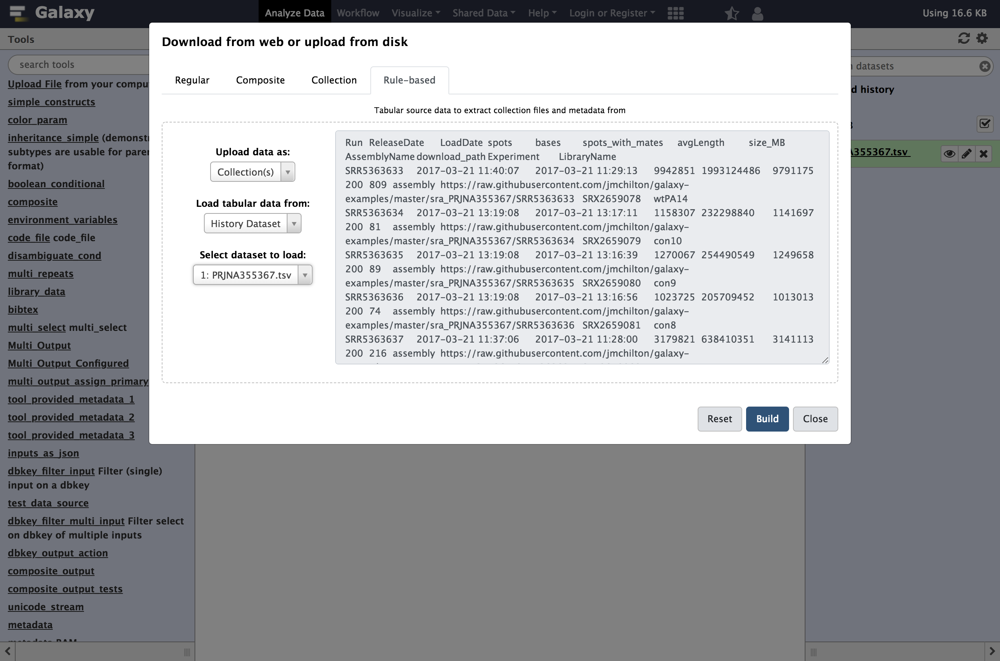
The resulting table should look something like the following: 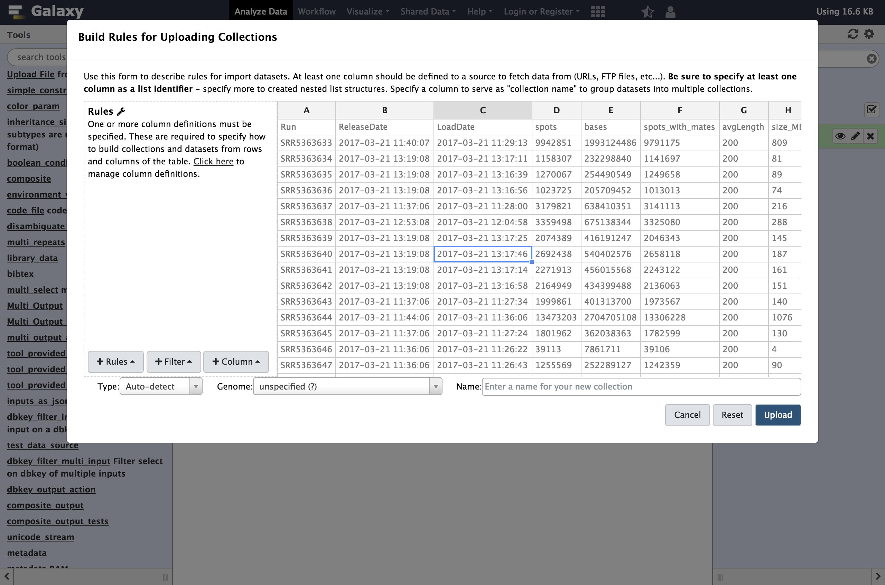
Navigate to the end of the table and notice that column J is the URL target we are hoping to download for each file.
- As in the previous exercises, please:
- Set this
Column definitionfor the URL targetStrip the header row
solution Solution
From Filter menu, select
First or Last N Rows
- Filter first Row
From Rules menu, select
Add / Modify Column Definitions
Add Definition,URL, ColumnJ. 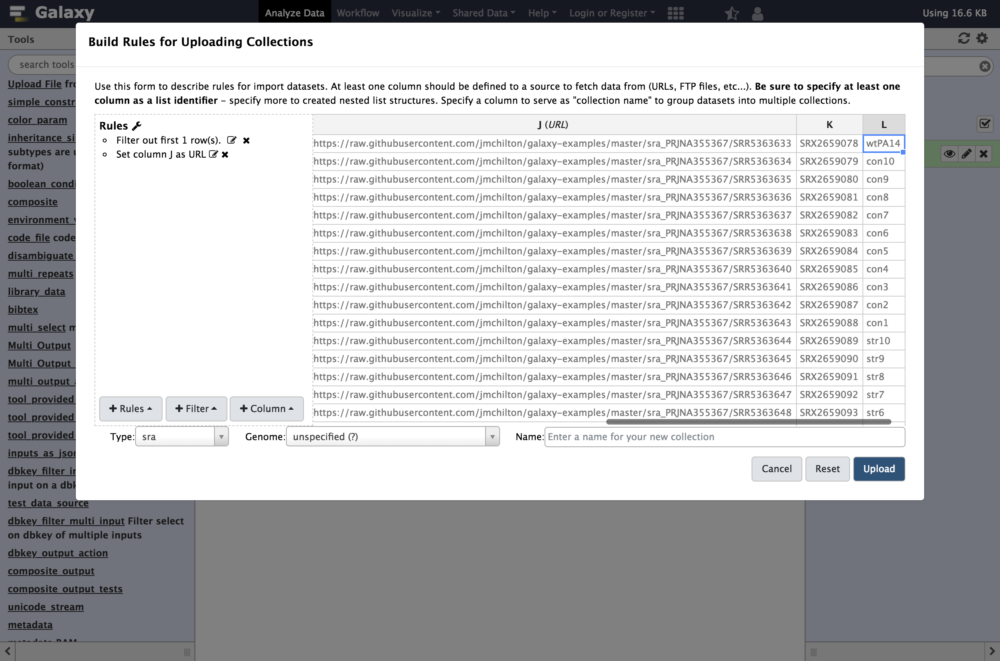For the analysis we wish to do, we want to group these files based on the type indicated in column
L(LibraryName) shown below. The source data though adds numbers to the library type to to generate theLibraryName, we need to strip those out to use the type as an identifier for grouping the datasets. To do this, use the regex column adder rule again.- From Column menu, select
Using a Regular Expression
- “From Column”:
L- Select
Create column from regular expression groups- “Regular Expression”:
([^\d]+)\d+.- “Number of Groups”:
1The result looks like: 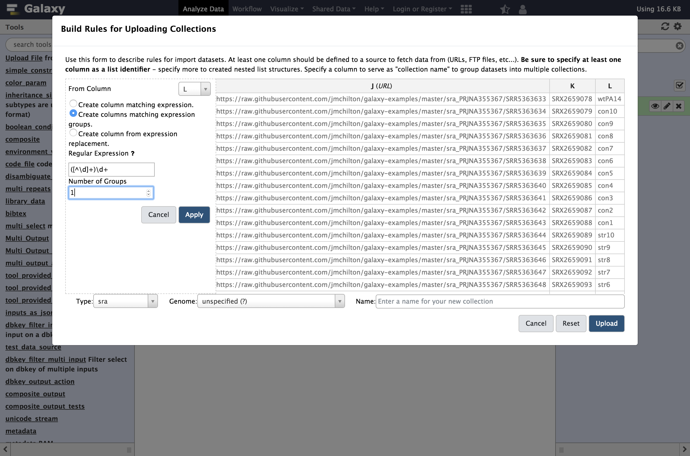
comment Regular expression explained
In this regular expression,
\dmeans any digit, so[^...]means match anything that is not inside the brackets. So together[^\d]+means match one or more, non digits at the start of the column and the()around that means capture them into a group. We’ve add\d+at the end of the expression but it isn’t grouped so we are effectively ignoring the digits at the end as we had hoped.Now we have two columns we need to assign list identifiers for, the new column
Mfor the first, outer identifier and the first columnAfor the inner, second identifier.- From Rules menu, select
Add / Modify Column Definitions
Add Definition,List Identifier(s), ColumnM- Click on
... Assign Another ColumnSelect column
Acomment Re-ordering columns
If you make a mistake in the order you select columns in you can simple use the up and down arrows to re-arrange the list
The result should look something like this: 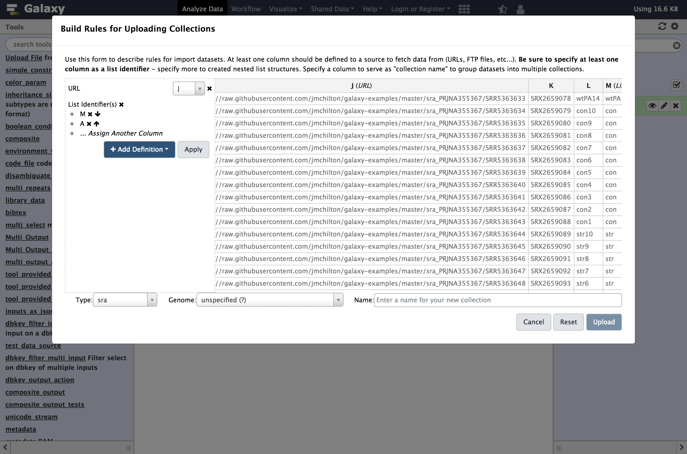
Click
Applyto return to the rule preview screen and notice there are two column listed for the list identifier definition 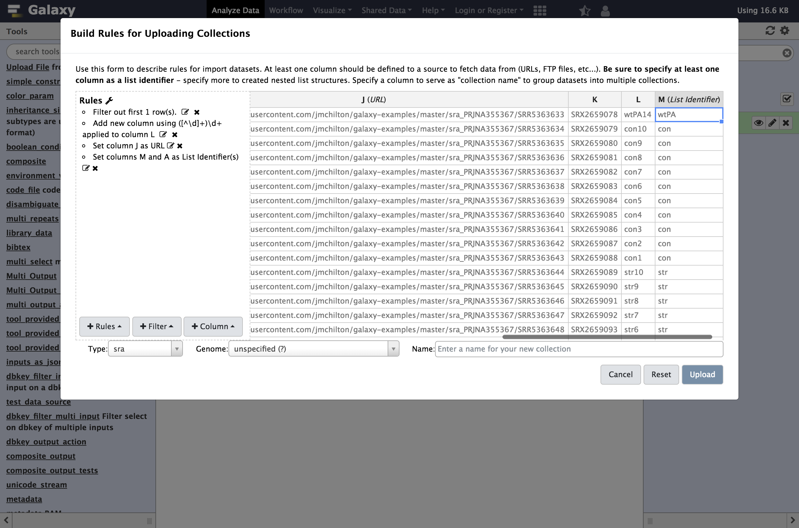- Finalize your collection:
- “Type”:
txt- Name your Collection
- Click
UploadNote: set “Type” to
sraif you used real data from SRA instead of the table from exercise. 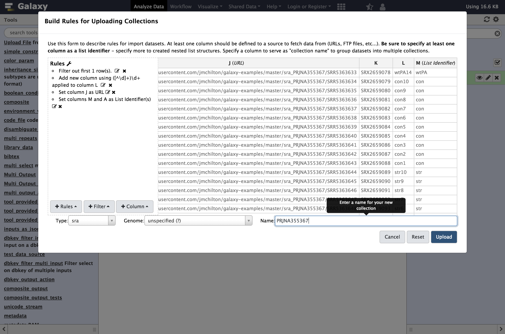
Apply Rules to Existing Collections
To start this example, we will first upload a simple, flat collection of data. The data files we will use will be the same as those used by the DESeq2 Vignette from the Pasilla Bioconductor Package.
hands_on Hands-on: Applying Rules to Existing Collections
- Open the Rule Builder
- “Upload data as”:
Collection(s)- “Load tabular data from”:
Pasted Table- Paste the following table:
https://raw.githubusercontent.com/jmchilton/galaxy/apply_rules_tutorials/test-data/rules/treated1fb.txt treated_single_1 https://raw.githubusercontent.com/jmchilton/galaxy/apply_rules_tutorials/test-data/rules/treated2fb.txt treated_paired_2 https://raw.githubusercontent.com/jmchilton/galaxy/apply_rules_tutorials/test-data/rules/treated3fb.txt treated_paired_3 https://raw.githubusercontent.com/jmchilton/galaxy/apply_rules_tutorials/test-data/rules/untreated1fb.txt untreated_single_4 https://raw.githubusercontent.com/jmchilton/galaxy/apply_rules_tutorials/test-data/rules/untreated2fb.txt untreated_single_5 https://raw.githubusercontent.com/jmchilton/galaxy/apply_rules_tutorials/test-data/rules/untreated3fb.txt untreated_paired_6 https://raw.githubusercontent.com/jmchilton/galaxy/apply_rules_tutorials/test-data/rules/untreated4fb.txt untreated_paired_7Next, we set up the column types:
- From Rules menu, select
Add / Modify Column Definitions
Add Definition,URL, columnAAdd Definition,List Identifier(s), columnB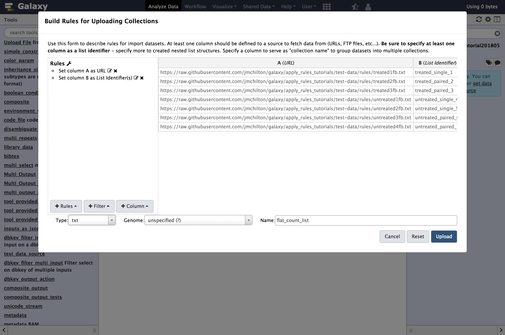- Finalize the collection:
- “Type”:
txt- Give the collection a name.
- Click
Build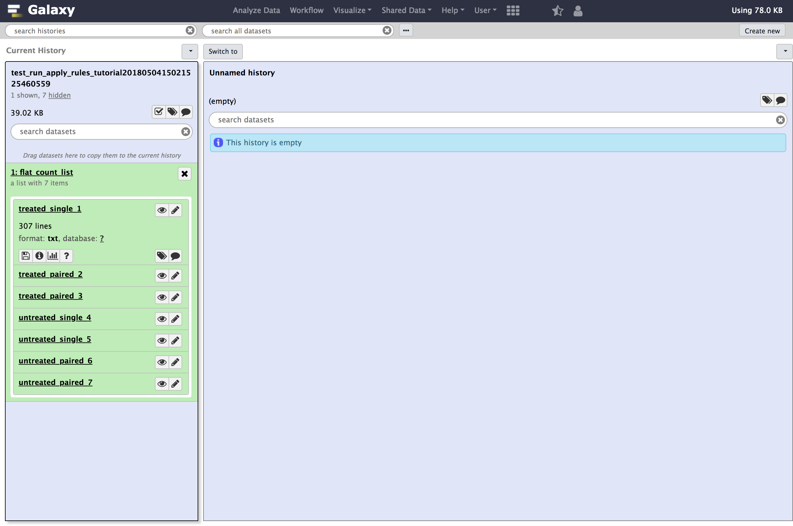The first thing we will do to this new collection is add some levels or depth to its structure. Lets assume we want to group it into “treated” and “untreated” lists and “paired” and “single” sublists below that. We can do this with the
Apply Rulescollection operation tool, which will likely be under theCollection Operationstool menu in your Galaxy interface.Open the Apply Rule to Collection tool
The very simple interface should look something like this: 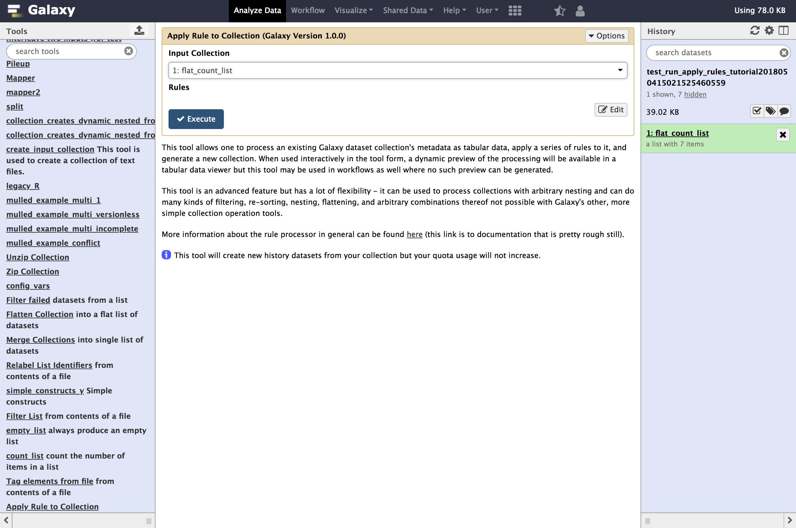
This interface simply lets one pick a collection to operate on and then launch the rule builder window to work to describe and preview manipulating the metadata of that collection.
- Apply Rule to Collection tool with the following parameters:
- “Input Collection”: the collection we just uploaded
- Click the
Editbutton 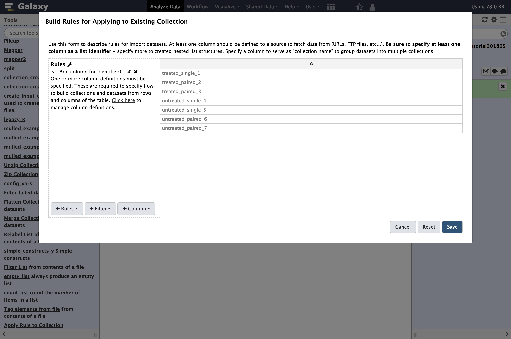When a flat collection is used with this tool, the rule builder will initialize a default rule to pull the list identifier out for each item of the collection as shown above. Next we will use regular expressions to build two new columns, these columns will group the datasets into “treated” and “untreated” sublists and then “single” and “paired” sublists of that. This rule is found under the
Columnmenu.We’ll transform column A into some more useful columns
- From Column, select
Using a Regular Expression
- “Column”:
A- Select
Create columns matching expression groups- “Regular Expression”:
(.*)_(.*)_.*- “Number of Groups”:
2comment Regular expression explained
Here
.*means match any number of any character - so basically match anything. The parentheses around.*means form a “group” from whatever is matched. The_describes the literal_values in the identifier we are matching. The result is that everything before the first_will be matched as the first group and everything between the_characters will be matched as the second group. Click to apply this rule and two new columns should be created.We have defined two matching groups (the
(.*)in the regex), so the number of groups is set to2- From Rules, select
Add / Modify Column Definitions
Add Definition,List Identifier(s), ColumnBAssign another column, columnCAssign another column, columnA- Click
Save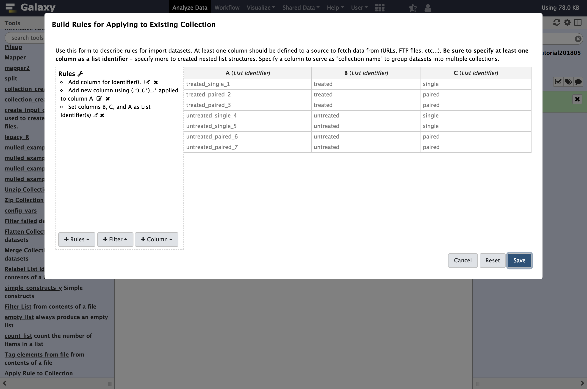
The resulting collection should have two new levels of depth for “untreated” vs “treated” and “paired” vs “single” as shown below: 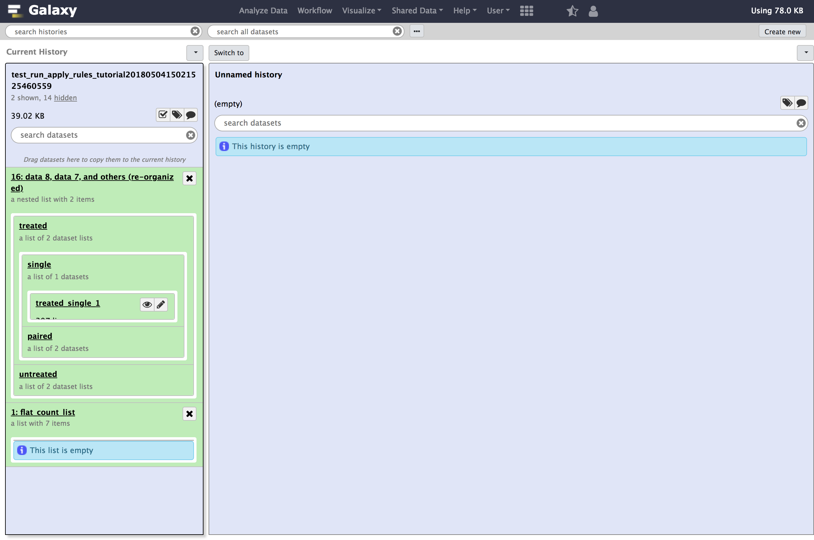
Placing the “single” and “paired” sublists inside the “treated” and “untreated” lists was a bit arbitrary and depending on the workflow these may need to be inverted at different parts of an analysis. The Apply Rules tool can be used to invert these levels if that is needed.
- Apply Rule to Collection tool with the following parameters:
- “Input Collection”: the new nested list we created in the previous step
- Click “Edit”.
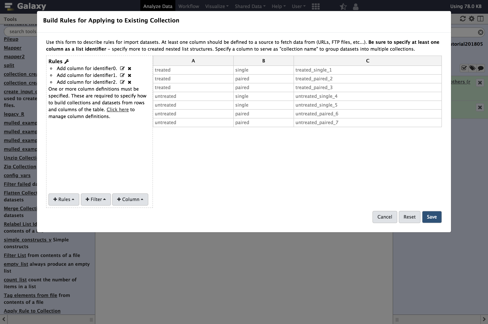
Notice when loading a nested collection into the rule builder, there is a column for each layer of the list for each element. One can pretty easily invert the outer two layers of the list by simply assigning the list identifiers in a new order. So select to assign “List Identifiers” and this time assign them to columns “B”, “A”, and “C” - in that order.
- From Rules, select
Add / Modify Column Definitions
Add Definition,List Identifier(s), ColumnBAssign another column, ColumnAAssign another column, ColumnC- Click
Save
The resulting collection should be inverted.
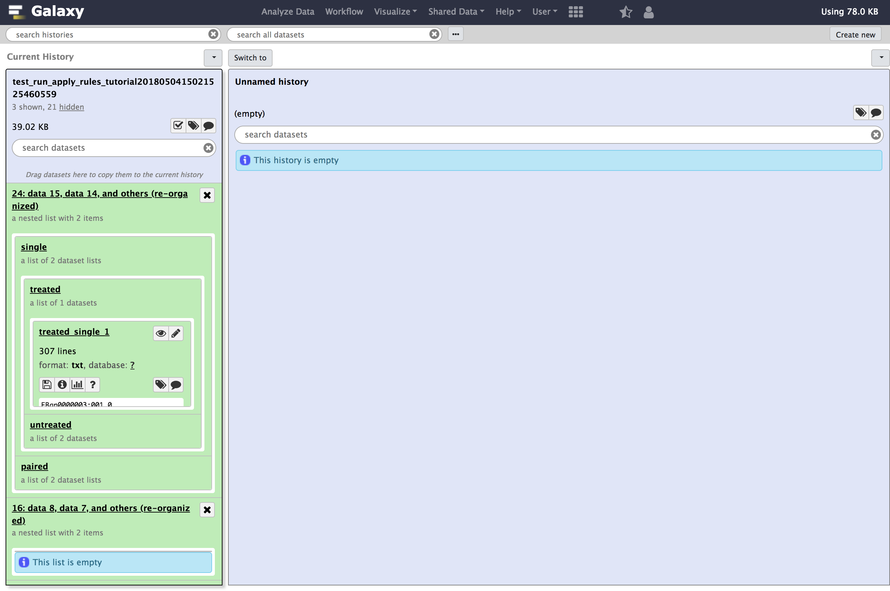
In addition to structural re-organizations of a collection, the Apply Rules tool can be used to filter elements out of the collection.
- Apply Rule to Collection tool with the following parameters:
- “Input Collection”: the original flat list created
- Click
Edit- From Filter menu, select
From a regular expression
- “From Column”:
A- “Regular Expression”:
.*_single_.*- From Rules menu, select
Add / Modify Column Definitions
Add Definition,List Identifier(s), ColumnA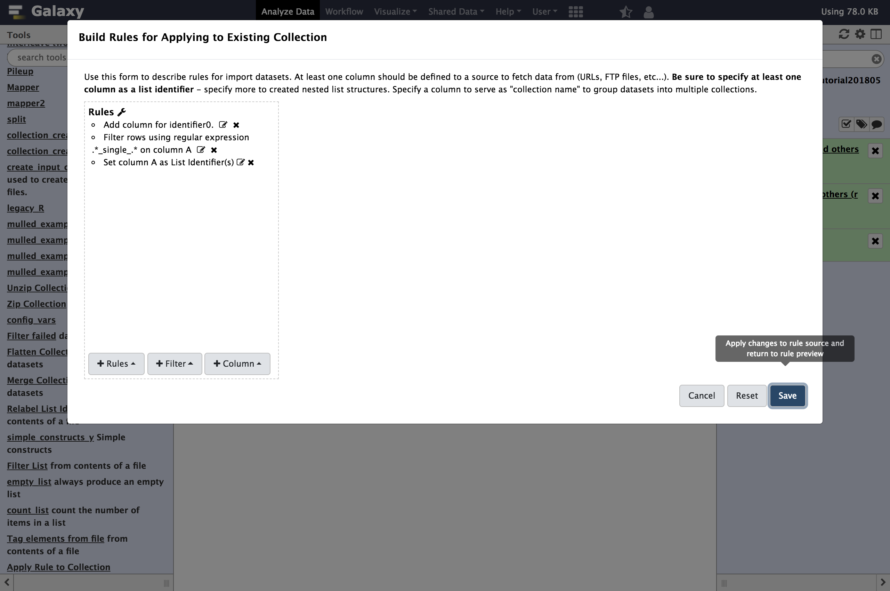
The resulting collection should be a filtered version of the original list.
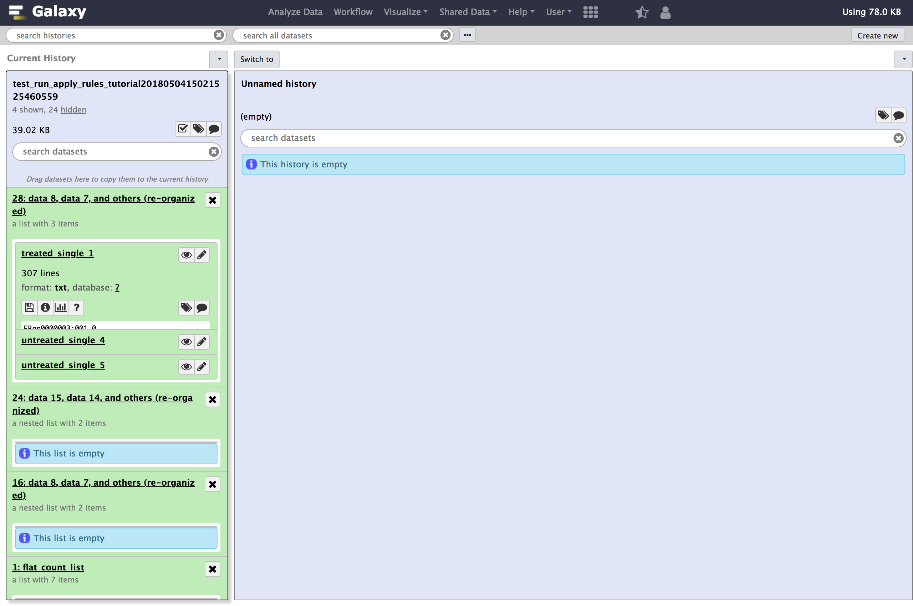
Structural re-organizations of collections can also be combined with filtering. To demonstrate this, reopen the original flat list created for this example again in the rule builder of the Apply Rules tool. Use the same regular expression as last time to filter the result but also add a column for “treated” and “untreated” list identifiers.
- Apply Rule to Collection tool with the following parameters:
- From Filter menu, select
Using a Regular Expression
- “From Column”:
A- “Regular Expression”:
.*_single_.*- From Column menu, select
Using a Regular Expression
- “From Column”:
A- Select
Create column from regular expression groups- “Regular Expression”:
(.*)_single_.*- “Number of Groups”:
1- From Rules menu, select
Add / Modify Column Definitions
Add Definition,List Identifier(s). ColumnBAssign another column, ColumnA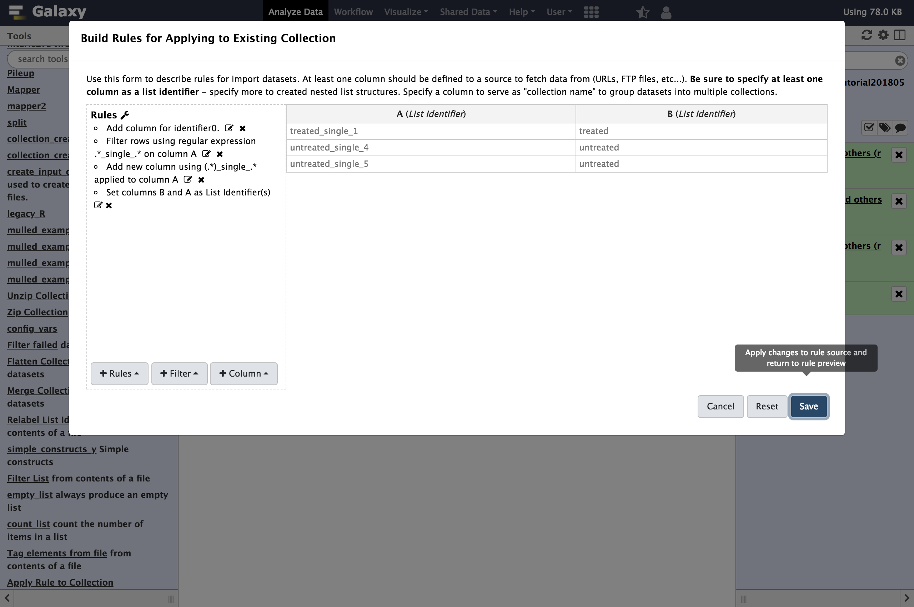
The resulting collection should be a filtered to only include the “single” data and broken into “treated” and “untreated” sublists.

congratulations Congratulations on successfully completing this tutorial!
feedback Give us even more feedback on this content!
To give us more detailed feedback about these materials, please take a moment to fill in the extended Feedback Form.